The program’s citation also appears, ready to copy in two formats, in the How to cite section of the app’s home page. The Zenodo DOI 10.5281/zenodo.23867439 always resolves to the most recent version; version 1.0.0 also has its own, 10.5281/zenodo.23867440. Code: https://github.com/luisangelbg/CorrelationPro.
CorrelationPro runs entirely inside your browser. The files you open are read on your computer and are never sent to any server: you can analyze the data of a thesis in progress, a clinical trial or a confidential survey without any of it leaving your machine. The program uses no accounts, keeps your data nowhere outside your computer and needs no internet connection to compute.
The illustrations, diagrams and screenshots in this manual are original: they were generated with the program itself or with code written for the manual. The nine datasets used as examples are in the public domain; when an example is simulated, the text says so.
The manual follows the same order as the app: thirteen numbered blocks, walked from top to bottom in the left-hand bar. Each chapter explains one block and carries its number—Chapter 5 is Block 5, and its sections, figures and tables are numbered 5.1, 5.2…. The introduction has no number: its sections are I.1, I.2….
Each chapter opens with the idea the block puts to the test, goes on with what is on screen in the order it appears, and closes with the rules for reading the result and the most common mistakes. There is no need to read it from cover to cover: if you already know what you want to measure, the table in Section 1.4 tells you which measure to use and in which block it is, and Appendix B gathers the reading rules of every block.
The block’s color appears in the opening of its chapter, in the number of each section, in the tab on the edge of the page and in the contents, and it is the same as in the band on the cover.
| Block | Name in the app | What it does |
|---|---|---|
| 1 | Home | The idea of correlation in plain words, six labs that really compute, the catalog of 98 measures, the glyphs, the palettes and the reporting styles |
| 2 | Data | Opening spreadsheets or text, the kind and role of each column, missing data, transformations and the “which correlation should I use?” assistant |
| 3 | Exploration | Scatterplot matrix, normality, linearity, outliers, influence and the recommended coefficient for each pair |
| 4 | One pair in depth | Every coefficient for two variables, with its test, its intervals, the bootstrap, the permutation test and the Bayes factor |
| 5 | Matrix | The matrix of many variables with its multiple-testing corrections, its diagnosis, nine glyphs and the table to publish |
| 6 | Nonlinear | Measures that see any form of dependence, the scan of the whole matrix and the copulas |
| 7 | Partial and sets | Controlling for third variables, the multiple correlation and the correlations between two sets of variables |
| 8 | Categorical | Contingency tables, their measures, the latent correlations and the matrix with the right coefficient for each pair |
| 9 | Agreement | Concordance, Bland–Altman, intraclass coefficients and the κ family: when the question is whether two measurements say the same thing |
| 10 | Structure | Groups, repeated measures, time series, spatial data, phylogenies, angles and compositions |
| 11 | Networks | Marginal, partial and regularized correlation networks, with centralities and communities |
| 12 | Compare and plan | Comparing correlations and matrices, correcting for attenuation and range, planning the sample and combining studies |
| 13 | Figures and report | Exporting figures, designing a palette, the table to publish, the written methods, the report and the project |
Clarifications and practical tips that save time.
What can change your conclusions if it is overlooked.
The idea behind a computation, without unnecessary formulas.
A case with the data included in the program, with the numbers the app gives.
| If the result falls in this case… | then this is the recommended reading. |
These are guides for interpretation, not laws: what you know about the phenomenon, the design and how it was measured always comes first.
What is seen again and again in papers and theses, and how to avoid it.
| Written like this | Means |
|---|---|
| Use across the app | A button, field or menu of the app, with its text as it appears on screen in English. |
| Block 12›Meta-analysis | A path: open the first and look inside it for the second. |
sepal_length, .csv | A column name, a file name or a value to be typed as is. |
| r, ρ, τ, n, p | The symbols of statistics, in italics when they are Latin letters; ρ is the population correlation and r the sample one. |
| .74 · 0.74 | Numbers are written as the app writes them in the chosen style. This manual uses the social sciences style: no leading zero for what cannot exceed 1 (r, p) and a leading zero for everything else. |
| ● ◐ — | Available · partly available or with conditions · does not apply. |
A correlation looks like the simplest computation in statistics, and that is why it is the one most often misused: with data that cannot support it, with the wrong coefficient, without an interval, without looking at the cloud, ignoring that the cases come in groups or in time. CorrelationPro brings together in one place the measures of association that the literature has proposed over a hundred and forty years, with their tests and their conventions, and walks you through the analysis in the order in which it is done right.
It is a program to measure, test, compare and communicate the association between variables. It runs in the browser, with nothing to install, and brings its own computing engine written from scratch: no part of it depends on other people’s libraries.
It covers the classical correlations (Pearson, Spearman, Kendall) and the robust ones; those of nonlinear dependence, which see U-shaped or wave-shaped relations that Pearson does not; the partial ones and those that link two sets of variables; those for categorical, ordinal and latent variables; those of agreement between methods and raters; those for structured data—groups, repeated measures, time, space, phylogenies, angles and compositions—; correlation networks; and the tools that come after computing: comparing two correlations, correcting for measurement error, planning the sample size and combining studies.
Every result says which convention it used—what to do with ties, which divisor, which correction—because two programs that give different numbers for “the same” coefficient almost always differ in that. Every formula is explained, in the catalog and in the theory notes of each block. And the figures come out ready for a journal, with palettes that read the same with color blindness and in black and white.
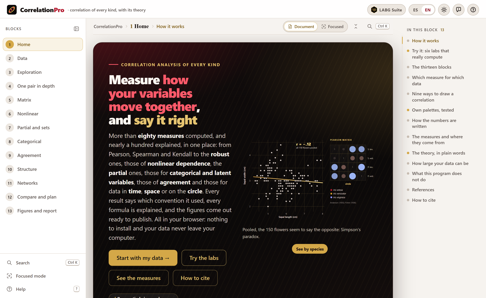
A good way to know whether the program is useful to you is to see which questions it answers, and in which block.
| Question | Block |
|---|---|
| Which coefficient should I use with these two variables? | 2 3 |
| Do my data meet Pearson’s assumptions? Are there outliers that decide everything? | 3 |
| How large is the correlation, with what interval, and is it different from zero? | 4 |
| What is the evidence for and against a relation? | 4 12 |
| How are twenty variables related to one another, and which of those correlations survive the multiple-testing correction? | 5 |
| Is there a relation that is not a straight line, or that only shows up in the tails? | 6 |
| Are two variables still related when I control for a third? | 7 |
| Are two sets of variables alike (two ordinations, two distance matrices)? | 7 |
| How strongly associated are two categorical variables, or an ordinal and a continuous one? | 8 |
| Do two instruments, two methods or two raters say the same thing? | 9 |
| Are my cases independent? What if they come in groups, in time or in space? | 10 |
| Which variables are directly connected with which, and which one is at the center? | 11 |
| Is this correlation larger than that one? How many cases do I need? What do all the studies say together? | 12 |
| How do I publish the figure, the table and the methods? | 13 |
Everything that follows rests on six ideas. If you keep them in mind, half of the mistakes made with correlations are no longer possible.
A table: one row per case and one column per variable. It is opened from a file, pasted from a spreadsheet or taken from the examples.
| In | Format |
|---|---|
| Spreadsheets | .xlsx, .xlsm and .ods workbooks, with a choice of sheet |
| Text | .csv, .tsv, .txt and .dat, with comma, semicolon, tab or bar as delimiter, decimal point or comma, and UTF-8, UTF-16 or Latin-1 encoding, all detected automatically |
| Pasted | Whatever you copy from a spreadsheet, with its header |
| Projects | A .json package saved earlier by the app itself (Block 13) |
| Summaries | To compare correlations, correct them, plan or run a meta-analysis, typing r and n is enough (Block 12) |
| Out | Format |
|---|---|
| Figures | PNG, SVG, vector PDF and TIFF, at the journal widths of 85, 114 and 180 mm, through the figure studio |
| Tables | Copied to the word processor with their formatting, or as CSV and HTML |
| Text | The written methods with their references, and a printable report |
| Project | A .json package with the data, their types and the preferences, to resume the analysis |
Only a modern browser, in a version from the last few years. There is nothing to install and no internet connection is needed; the whole program fits in one folder.
index.html. It is the simplest way and everything works the same: all the computations and the examples are inside the program.Open CorrelationPro.bat. It starts a minimal local server on port 9950 and opens the app at http://localhost:9950. It is only needed to open it from another computer or a tablet on the same network; the file server.ps1 explains how.Without copying anything, the same app opens online at https://luisangelbg.github.io/CorrelationPro/, and the program folder can be downloaded from https://github.com/luisangelbg/CorrelationPro.
Preferences—language, theme, palette, number style—are saved in the browser itself and remembered the next time. Data are not: every time you open the app it starts empty, and to resume an analysis there is the project package of Block 13.
The engine is written so that the browser does not freeze. These are times measured on a desktop computer with the same engine that runs in the app:
| Computation | Time | In practice |
|---|---|---|
| Pearson matrix of 200 × 200 variables, 1,000 rows | 34 ms | instant |
| Pearson matrix of 1,000 × 1,000 variables | 83 ms | instant; drawn on a canvas |
| Kendall’s τ-b with 100,000 pairs | 64 ms | instant |
| Distance correlation with 2,000 pairs | 33 ms | instant; up to 3,000 pairs |
| Mantel test, 9,999 permutations, 200 sites | 0.34 s | a moment |
| BCa bootstrap of r with 1,999 resamples, 1,000 pairs | 0.9 s | a moment |
| Graphical lasso with EBIC, 30 variables and 300 rows | 1.0 s | a moment |
When a computation is going to take more than a moment, the app says so with an animated wait and, when it can, adjusts the number of resamples to the time available on its own, and tells you.
All the applications of the suite share the same bar, the same navigation and the same figure tools, so what you learn here also serves you in the others.
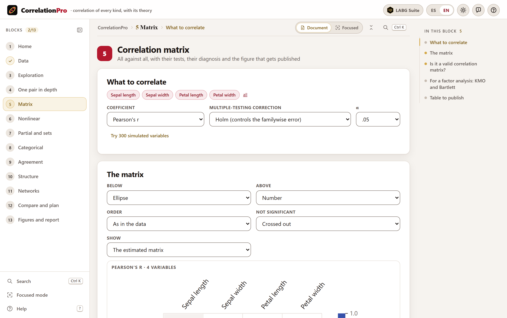
1 2 3 4 5 6 7 8 9 10?).[ collapses it.Ctrl+K). A block, a section, a control or a measure, by its name.At the top of each block, the breadcrumb says where you are—CorrelationPro›5 Matrix›What to correlate—, and at the foot of each block two buttons lead to the previous and the next one. With Alt+← and Alt+→ you move from one block to another from the keyboard; in focused mode, from one section to another. When you change a control and the results are recomputed further down, a floating button appears, Last change, that takes you back to the control you touched.
Ctrl+K) with “kendall” typed: it finds the five catalog measures that carry the name and says in which block each one is computed. Enter goes to the chosen result.Every figure in the app can be opened in the figure studio, a window shared by the whole suite where the texts, the font size, the legend and the colors are changed without touching the data, and which exports at the widths and resolutions journals ask for. Chapter 13 explains it in depth. Next to each figure, the ✎ button opens the figure editor, to change its texts, its colors and its legend.
To learn without data of your own, the app brings nine public-domain datasets, all classics in the history of correlation. They are opened in Block 2›An example dataset or with the buttons of the blocks that use them. When a block needs an example that does not exist among them—spatial data, a phylogeny, a panel of raters—it simulates one and says so in its title: “Simulated… (not real data)”.
| Dataset | n | What it holds and what it is good for |
|---|---|---|
| Anderson’s irises (1935, 1936) | 150 | Four measurements of the flower of three Iris species. The correlation matrix, the correlations within and between species, and Simpson’s paradox. |
| Galton’s sweet peas (1877) | 700 | Diameter of the mother seed and of the daughter seed in the sweet pea (Lathyrus odoratus). Many ties: the conventions of Spearman, Kendall and ξ. |
| Galton’s heights (1886) | 928 | Height of children and of their parents. The table with which regression to the mean was described. |
| Darwin’s maize (1876) | 15 | Height of pairs of maize plants (Zea mays), cross-pollinated and self-pollinated, in the same pot. Paired data. |
| Switzerland, 1888 | 47 | Six indicators of 47 French-speaking districts: relations of every sign, the partial network and the matrix that feeds a factor analysis. |
| US economy, 1947–1962 | 16 | Seven nearly collinear annual series: very high correlations that come from time, not from a direct relation. |
| Titanic, 1912 | 2,201 | Class, sex, age and survival: contingency tables, Cramér’s V, the odds ratio and the tetrachoric correlation. |
| Car braking (Ezekiel, 1930) | 50 | Speed and stopping distance: a relation that grows faster than a straight line. |
| Sleep with two drugs (1905) | 10 | Extra hours of sleep of ten patients with two drugs: paired data, the example with which the t test was introduced. |
The blocks are in the order in which a sound correlation analysis is done. There is no need to go through all of them: those that do not apply to your data are skipped, and each block tells you when it is worth going back to an earlier one.
What you open in Block 2 is used by all the others. If you change the kind of a column or the handling of missing data, or open other data, each block recomputes its part the next time you visit it, and its check mark in the bar goes off until then.
A statistics program is worth what its numbers are worth. Each engine of CorrelationPro was compared, block by block, with independent implementations written by other people and with formulas recomputed separately, on the example datasets and on simulated data with hard cases: ties, outliers, samples of five cases, correlations close to 1.
The comparison also served to find errors, our own and others’. When a published reference does not match the formula of the original paper, the app follows the original formula and the corresponding chapter says so. The details—what was compared, with what tolerance and which errors were found—come with the program in its validation folder.
Knowing where a tool ends is as useful as knowing what it does.
| It does not do | Why, and what to do |
|---|---|
| Causal inference | A correlation does not say what causes what. The app reminds you where it matters, but it does not estimate causal effects. |
| Full regression models | Association is measured here. For linear and mixed models with their diagnostics there is another application of the suite, SigmaPro. |
| Factor and component analysis | The correlation matrix is their starting point, and Block 5 says whether it is fit for that (KMO and Bartlett); the analysis itself is in PCAPro, of the same suite. |
| Multilevel correlation with a mixed model | Block 10 separates the within- and between-group correlation descriptively; the bivariate mixed model is not included. |
| Data that do not fit in memory | Up to tens of thousands of rows and a thousand variables; beyond that, or with costly measures, the app warns before starting. |
The first block asks for no data: it teaches. It explains in plain words what a correlation is and what it is not, lets you play with six labs that really compute with the same engine the app will use on your data, describes the 98 measures of the catalog with their formula and their original paper, and sets three things that hold for the whole app: the glyph of the matrices, the color palette and the way numbers are written.
The figure on the home page is not decoration: it is the most important lesson of the program, with real data. It shows the 150 flowers of Anderson’s irises, sepal length against sepal width.
Taken together, the flowers say that the longer the sepal, the narrower it is: r = −.12. But the See by species button separates the three species, and within each one the relation is the opposite and much stronger: +.74 in Iris setosa, +.53 in I. versicolor and +.46 in I. virginica. The correlation of all of them together mixes two different things—how flowers vary within a species and how the species differ from one another—and describes none of them. This is Simpson’s paradox (Simpson, 1951), and Block 10 is made to measure it.
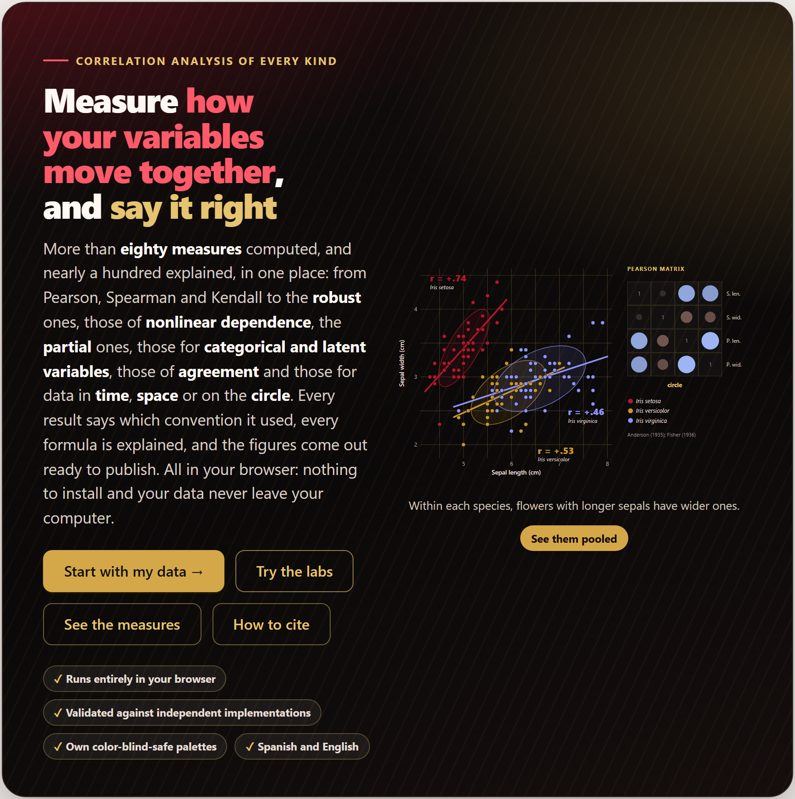
The four buttons on the left lead to what follows: Start with my data → opens Block 2; Try the labs, See the measures and How to cite scroll down to their sections on this same page.
Below the home figure, How it works sums up in seven steps the order in which the app walks through an analysis: load the data and their types, explore the cloud and the assumptions, choose the right coefficient, measure with a test and an interval, control for third variables and the structure, compare groups, matrices or studies, and publish the figure, the table and the report. Further down, The thirteen blocks shows one card per block with what it does; a click on the card opens it.
None of them is a recorded animation: every move recomputes each coefficient and its p-value with the same engine the app uses on your data. They are chosen with the tabs at the top.
A cloud of 30 points you can touch: drag a point, click an empty spot to add one and double-click a point to remove it. On the right, twelve coefficients in four families—linear, rank, robust and general dependence—move at the same time. The buttons at the top set starting clouds: Linear, With an outlier, Parabola, Circle, Step, Random and Irises (petal).
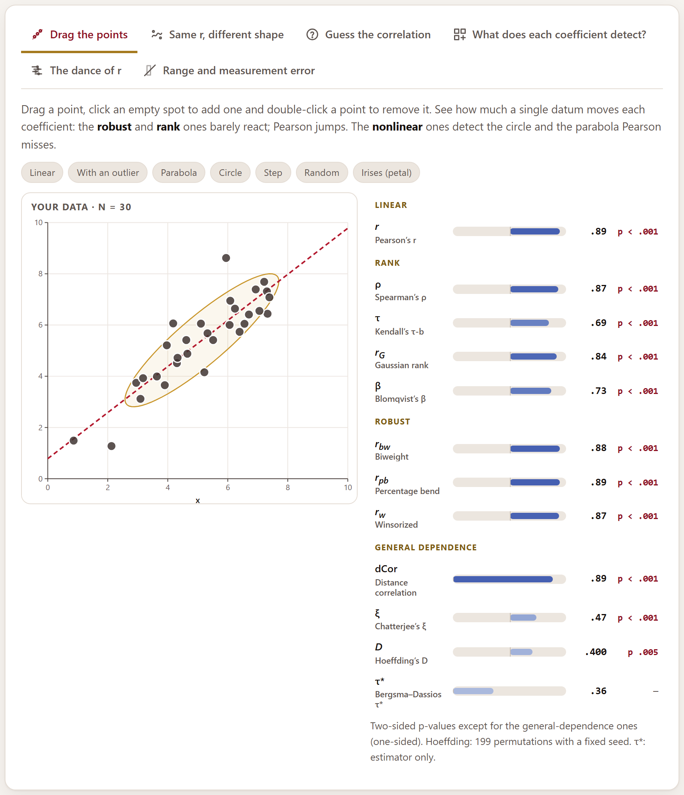
Press With an outlier: 28 points with no relation and one far away, at the top right. Pearson climbs to a high correlation because of that single point; the rank and robust coefficients barely move. Drag the outlier toward the center and watch Pearson collapse. This is why Block 3 checks the influence of each data point before recommending a coefficient.
The p-values are two-sided except for the general dependence measures, which can only be positive and are tested one-sided. Hoeffding’s uses 199 permutations with a fixed seed, and the τ* of Bergsma and Dassios gives only the estimator, because its exact test is too slow to recompute at every move.
Pick a figure—Axolotl, Prickly pear, Pyramid, Agave, Star, Circle or X—and press Morph. The points move little by little toward the figure, but a move is only accepted if the two means, the two standard deviations and Pearson’s r stay equal to two decimals. In the end you have a completely different cloud with the same five numbers. The method is the simulated annealing of Matejka and Fitzmaurice (2017); the figures are this app’s own.
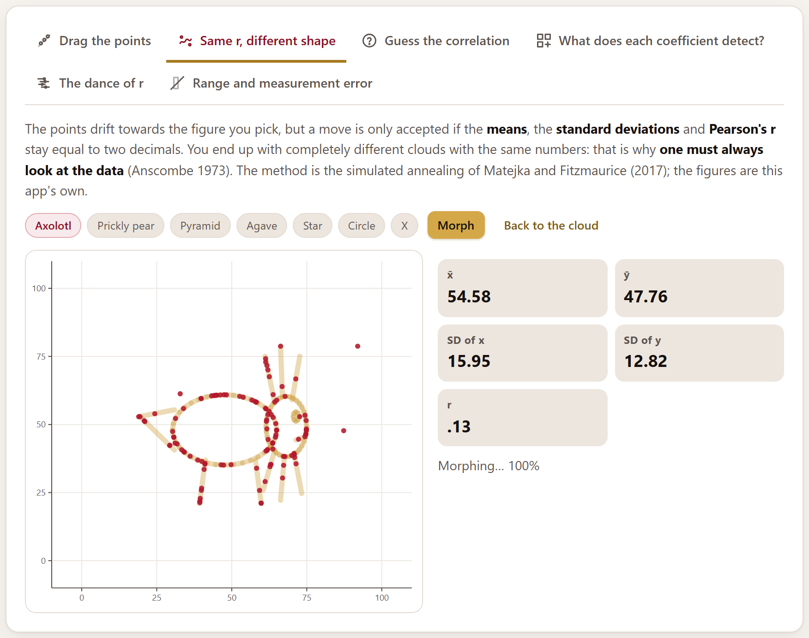
How well do you read a cloud? Move the control to the r you believe and press Check; Another cloud moves on to the next of ten rounds. The score does not count the raw error: it divides it by the difference the eye can notice, which is large near zero and small near ±1 (Rensink and Baldridge, 2010). Missing by .10 around .70 is worth less than missing by .10 around zero.
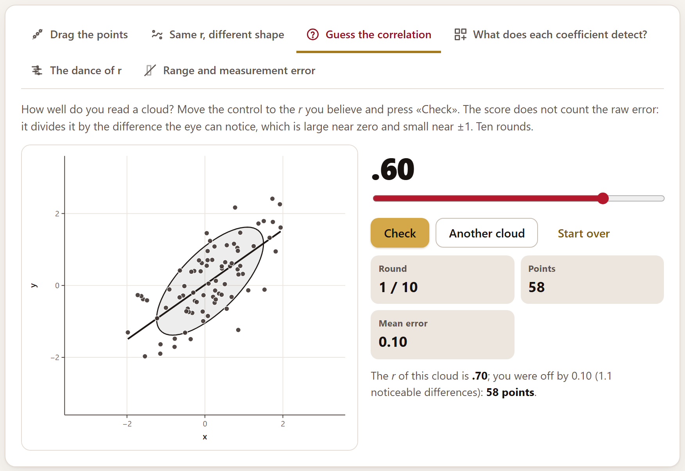
Nine shapes of relation against seven coefficients, in a table colored by the absolute value, with an asterisk where the test is significant at 5%. Pearson only sees the line; Spearman and Kendall, what is monotonic; distance correlation, Chatterjee’s ξ and Hoeffding’s D also see the parabola, the sine, the circle and the X. The n control changes the size of the samples and Another sample draws new ones.
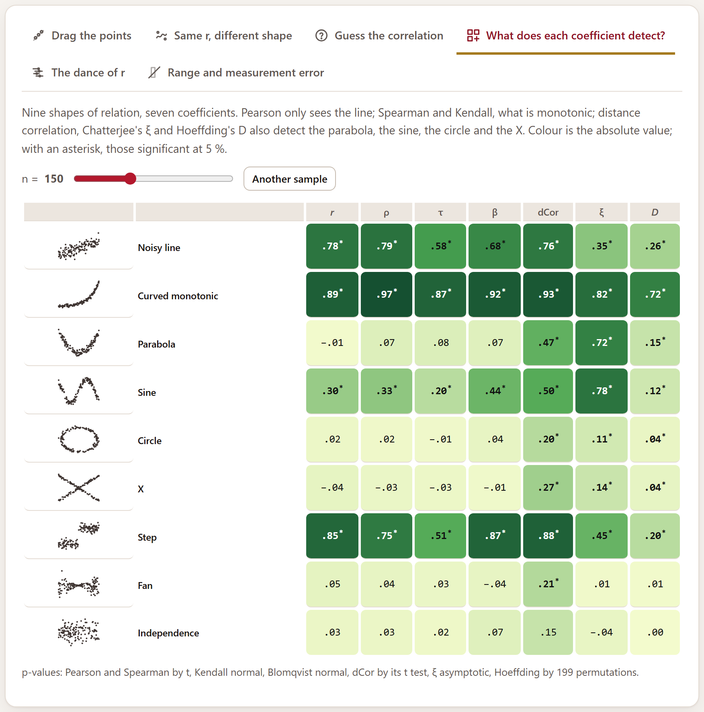
It means “no linear relation”. If the question is whether two variables have anything to do with each other in any way, a general dependence measure is needed. Block 6 computes them and scans the whole matrix looking for what Pearson does not see.
Set a population—its ρ and the sample size—and press Dance: each row is a new sample with its r and its 95% interval, and alongside, the distribution of the r values builds up, with the theoretical curve on top. With samples of 20 cases, r “dances” from .1 to .8 even though ρ is always .50, and in the long run 95% of the intervals contain ρ (Cumming, 2008). Clear starts over.
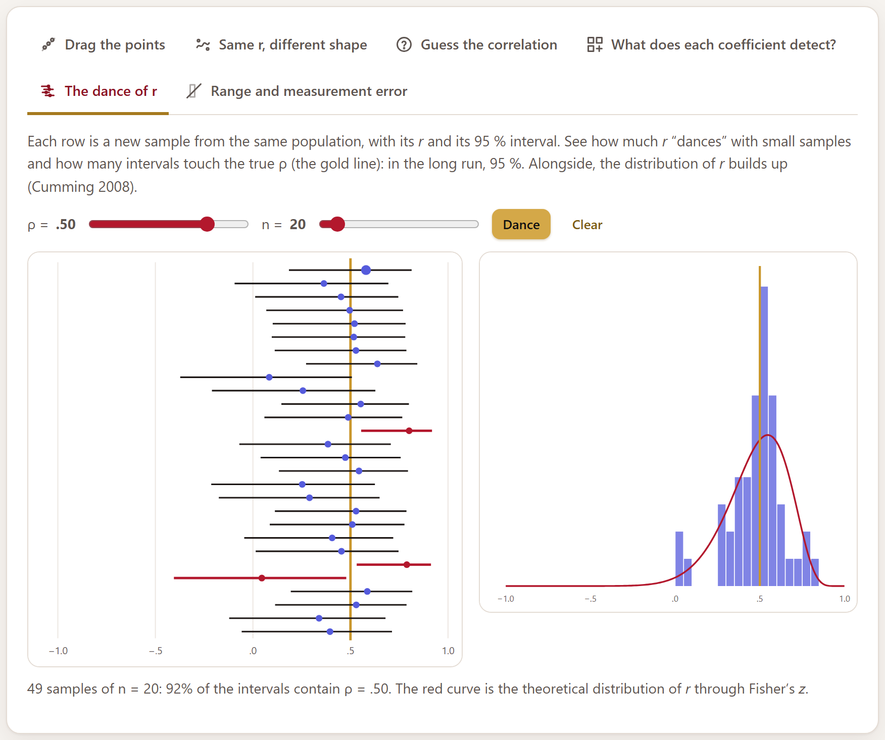
The two most common ways for a real correlation to come out smaller. Range restriction: if only part of the values of x is observed—only the plants that survived, only the students admitted—r drops; the percentile control chooses which part is seen. Measurement error: if x and y are measured with noise, r is “attenuated”; the reliability control sets it. The two cards on the right apply the corrections of Thorndike (case II) and of Spearman, which Block 12 offers for your own numbers.
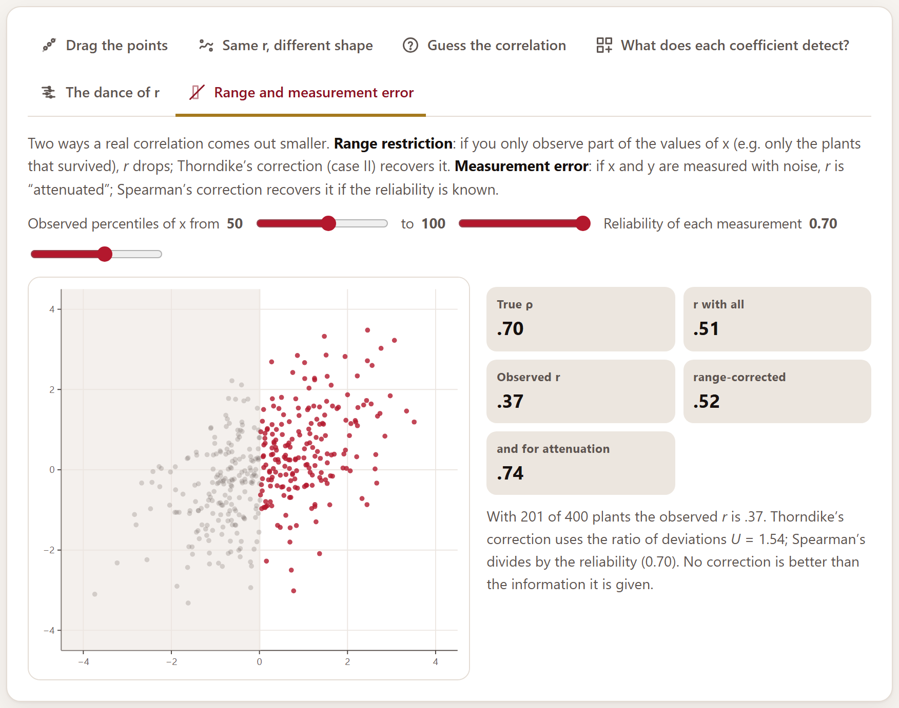
The kind of the two variables decides which coefficients make sense. The section Which measure for which data lays out the full map in nine cards, each with the block that computes it:
| Your two variables | Measures | Block |
|---|---|---|
| Continuous and continuous | r, ρ, τ, the robust ones, dCor, ξ, MIC | 4 6 |
| Ordinal and ordinal | ρ, τ-b, τ-c, γ, Somers’ d, polychoric | 8 |
| Nominal and nominal | φ, V, C, λ, U, odds ratio | 8 |
| Binary or groups and continuous | point-biserial, biserial, rank-biserial, η | 8 |
| Raters or methods | CCC, ICC, κ, W, α, Bland–Altman | 9 |
| Angles and dates of the year | circular–circular, circular–linear | 10 |
| Proportions of a whole | ρp, the centered log-ratio | 10 |
| In time, in space or on a tree | repeated measures, prewhitening, Dutilleul, contrasts | 10 |
| Two tables or two matrices | canonical, RV, Procrustes, Mantel, co-inertia | 7 |
There is no need to memorize it: the assistant of Block 2 applies it on its own to each pair of your columns.
In a correlation matrix each cell is a glyph. The app offers nine, and all of them carry the sign in their shape too, not only in the color: with a divergent palette, +r and −r print as the same gray, and a glyph that depends only on color loses the sign in a photocopy.
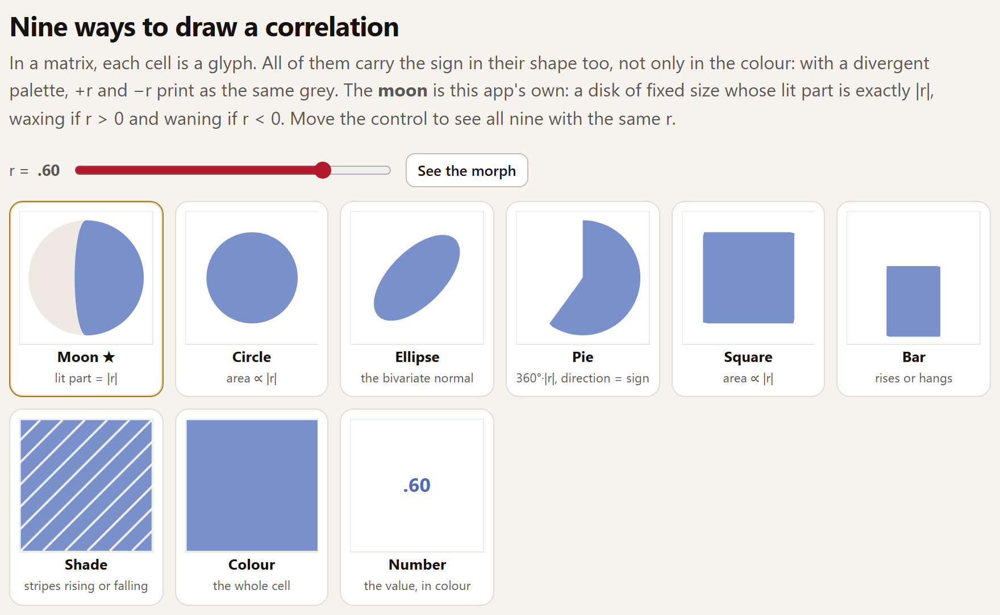
| Glyph | What it encodes |
|---|---|
| Moon ★ | This app’s own: a disk of fixed size whose lit part is exactly |r|, waxing if r > 0 and waning if r < 0. It reads the same in color, in gray and with color blindness. |
| Circle · Square | The area is proportional to |r|; the sign, by the color. |
| Ellipse | The shape of a bivariate normal with that r: tilted to the right if it is positive, thinner and thinner as it nears ±1 (Murdoch and Chow, 1996). |
| Pie | A sector of 360°·|r|, clockwise if it is positive. |
| Bar | Rises if it is positive and hangs if it is negative. |
| Shade | Stripes that rise or fall, with the intensity of |r| (Friendly, 2002). |
| Color · Number | The cell filled with color, or the value written in the color of its sign. |
Nineteen palettes designed for this app, named after plants, places and crafts of Mexico: twelve divergent ones—ten for a light background and two for a dark one—and seven sequential ones, for what goes from 0 to 1 (|r|, r², densities). All of them were built in a perceptual color space, where equal steps of r look like equal steps of color, and each one passes five checks, which the card shows with a check mark:
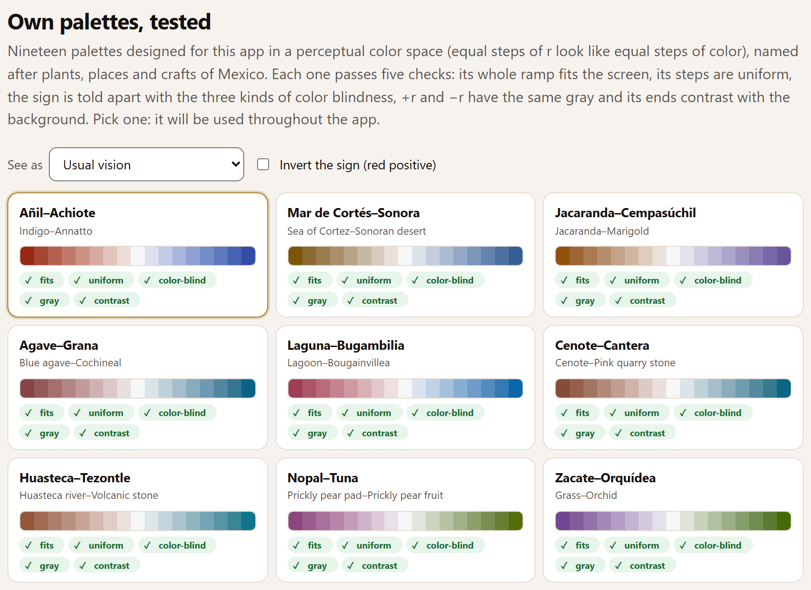
The See as menu draws all the palettes as a person with protanopia, deuteranopia or tritanopia would see them, or in grayscale, and the Invert the sign (red positive) box swaps the two hues for those used to the opposite convention. Below the gallery, the iris matrix is redrawn with the chosen palette. The palettes for figures with groups—one of our own, which keeps the distance between colors under the three forms of color blindness, and that of Okabe and Ito (2008)—are used automatically where they are needed. If none of them suits you, Block 13 has a designer to make your own.
Style manuals do not agree. The section How the numbers are written offers four styles, and the one you choose is used throughout the app: on screen, in the tables and in the report.
| Style | Comes out as | Rule |
|---|---|---|
| Psychology and social sciences (APA 7) | r(48) = .45, 95% CI [.20, .65], p < .001 | No leading zero for what cannot exceed 1 |
| Biomedical (SAMPL guidelines) | r(48) = 0.45, 95% CI, 0.20 to 0.65, P < 0.001 | Leading zero and a capital P |
| Mexican standard (NOM-008) | r(48) = 0.45, 95% CI [0.20, 0.65], p < 0.001 | Leading zero required, decimal point |
| Standard with decimal comma | r(48) = 0,45, 95% CI [0,20; 0,65], p < 0,001 | Decimal comma; the limits separated by a semicolon |
The same style can also be chosen from the table to publish in Block 13.
The section The measures and where they come from describes 98 measures of association and inference tools, each on a card. They are searched by name in the field at the top, or filtered by family: classical, robust, nonlinear, partial and sets, categorical and latent, agreement, structured, special data and inference. Under the name of each card come the author and year that define it, and the block where it is computed.
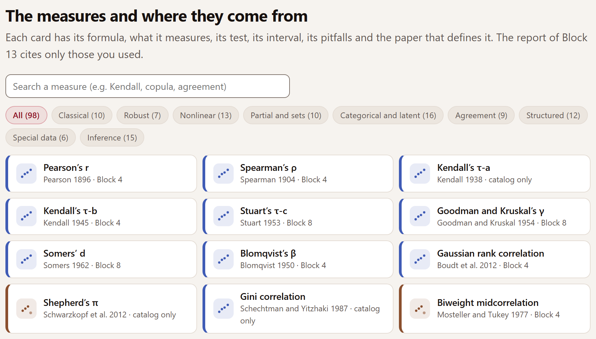
A click on a card opens it. Each one has the same parts: what it measures, its formula written as in a textbook, its hypothesis test, its confidence interval, its pitfalls and conventions—what it does with ties, which divisor it uses, where programs differ—and its full references.
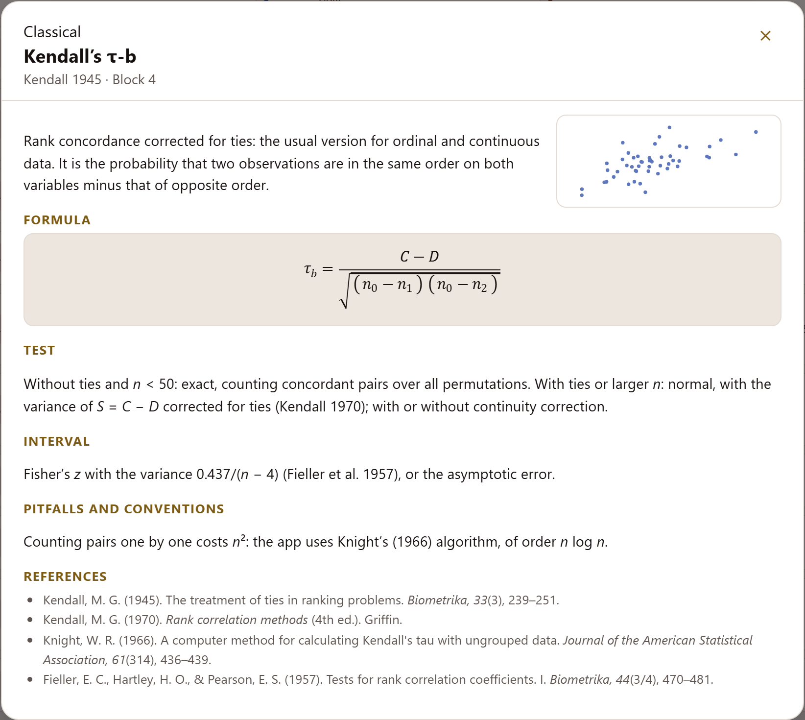
The search in the bar (Ctrl+K) finds the cards by their name and says in which block each measure is computed, as in Figure I.3.
The theory, in plain words gathers in twelve collapsible topics the ideas that hold up everything else. Each topic says in which block it is used, and several bring their own figure.
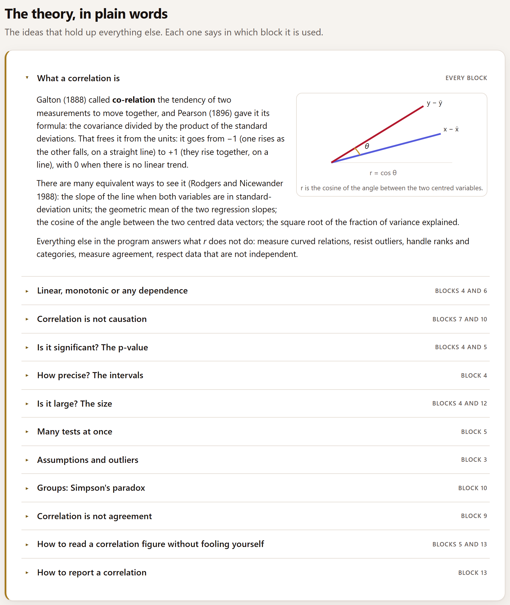
| Topic | Blocks |
|---|---|
| What a correlation is | all |
| Linear, monotonic or any dependence | 4 and 6 |
| Correlation is not causation | 7 and 10 |
| Is it significant? The p-value | 4 and 5 |
| How precise? The intervals | 4 |
| Is it large? The size | 4 and 12 |
| Many tests at once | 5 |
| Assumptions and outliers | 3 |
| Groups: Simpson’s paradox | 10 |
| Correlation is not agreement | 9 |
| How to read a correlation figure without fooling yourself | 5 and 13 |
| How to report a correlation | 13 |
At the end of the page, References lists the 229 works the app cites, which can be filtered by topic with the buttons at the top (See every reference unfolds the full list), and How to cite gives the program’s citation in APA format and in BibTeX, each with its button to copy it.
| If you are going to publish the figures… | choose the palette and the glyph here, once: the whole app will use them. |
| If the journal asks for a number style… | choose it here; the screen, the tables and the report will follow it. |
| If you do not know which coefficient to use… | do not decide yet: Blocks 2 and 3 recommend one from your data. |
Everything starts here, and so do almost all mistakes. This block opens your data, deduces the kind of each column and what it is for, counts the missing values and decides how to handle them, creates transformed columns and, for each pair of variables, proposes which correlation to use and why. What is decided here is used by the twelve blocks that follow.
One row per observation and one column per variable, with the names in the first row. It is the “long” layout of any well-made spreadsheet, and the only one the block needs.
There are three ways in. A file accepts delimited text (.csv, .tsv, .txt, .dat) and spreadsheet workbooks (.xlsx, .xlsm, .ods); drag it onto the box or pick it with a click. Paste opens a box where you paste the cells copied from a spreadsheet; Read what was pasted turns them into a table. An example dataset leads to the nine datasets of the next section.
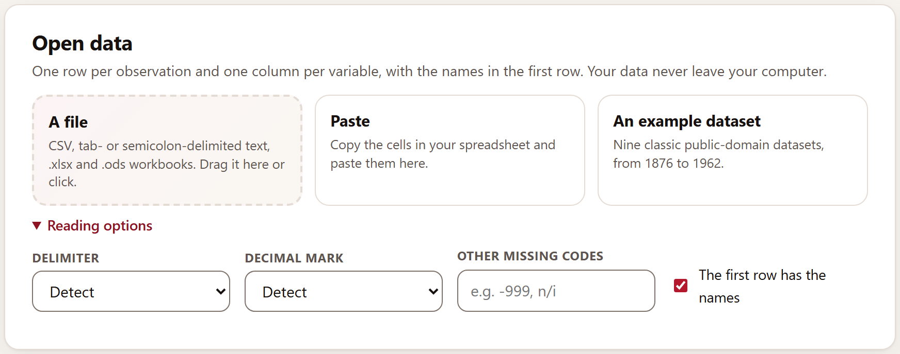
The reading options are only needed when detection gets it wrong. Delimiter forces comma, semicolon, tab or bar; Decimal mark, point (1.5) or comma (1,5); Other missing codes adds your own, separated by commas (for example -999, n/i); and the box The first row has the names is unchecked if your data have no header. If a workbook has several sheets with data, the app asks which one to open.
Besides the empty cell, 28 ways of writing it that turn up in real spreadsheets, regardless of case: NA, N/A, NaN, null, ., -, ?, nd, n/d, s/d, sin dato, no disponible, faltante, missing and spreadsheet errors such as #N/A, #VALUE! or #DIV/0!, among others.
Nine real datasets, published long ago or by governments, each with its source, its license and what it is good for (the table in Section I.7 summarizes them). Use this dataset opens it as if it were your data, with the kind and role of each column already declared.
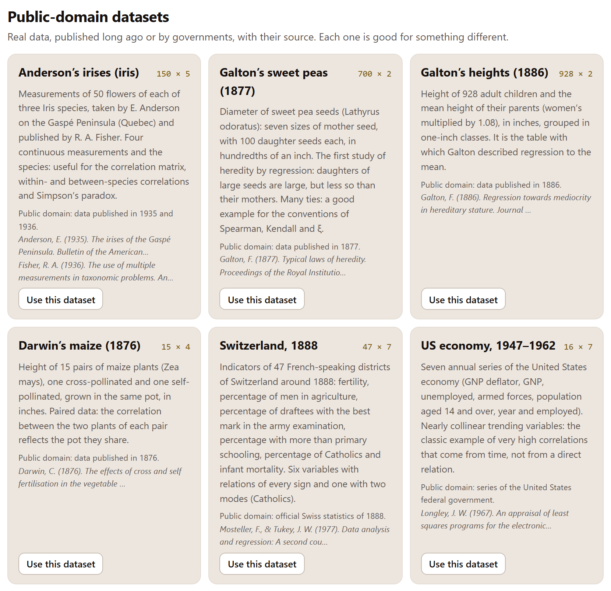
When you open some data, a message says what was read—Read “pasted data”: 12 rows and 4 columns, separated by tab, with a decimal point.—and the Your data card shows five figures and the table.
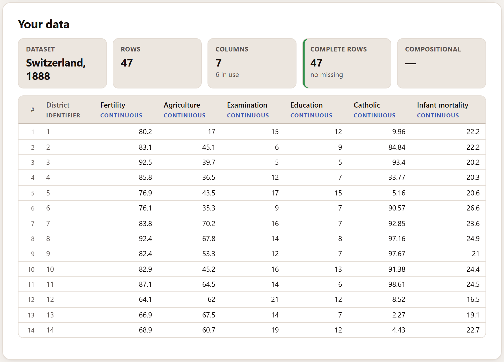
Compositional warns when the app finds three or more consecutive columns that add up to the same total in every row—percentages of a diet, fractions of sand, silt and clay—: they are parts of a whole, and their Pearson correlation is misleading by construction (Chapter 10). The table shows the first rows; if there are more, a note says so.
This is the most important card of the block. The kind decides which coefficients make sense; the role, how the column is used. The app deduces both from the values and from the column name, and explains why in the last column of the table. If it got them wrong, change them with the menus; Back to what was deduced undoes the changes.
| Kind | Deduced when… |
|---|---|
| continuous | the values are numbers with many distinct values. If many are repeated it says so, because ties matter for Spearman and Kendall. |
| ordinal | the values are integers with seven values or fewer and a short range (a 1-to-5 scale), or texts that form a known scale (low < medium < high, never < sometimes < always…), which are put in order automatically. |
| binary | there are only two values, numbers or texts. |
| nominal | the values are repeated texts with no order. With twelve categories or fewer it gets the group role. |
| circular | the name says angle, direction, hour, month or day of the year and the values fit its range (0 to 360, 0 to 24, 1 to 12, 1 to 366): the end lies next to the beginning. |
| date | all the values are dates; they are stored as days since 1970 and the column gets the time role. |
| identifier | the name looks like a key (id, folio, code, subject, patient…) or there is a different text in every row. If its values repeat, each value is a subject measured several times. |
| text | there are too many distinct texts to be categories. |
| empty | there are no data at all. |
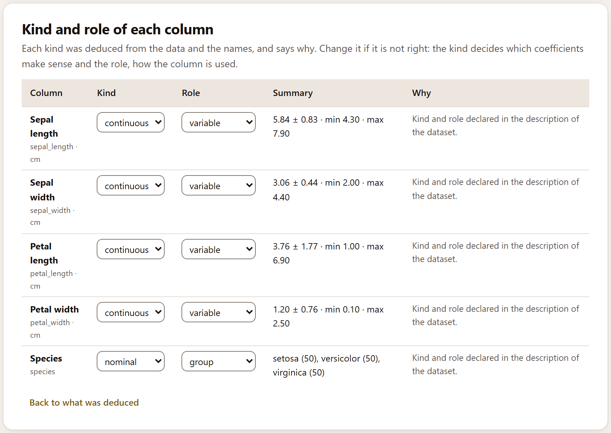
| Role | What it is for |
|---|---|
| variable | it is analyzed: it enters the matrices, the pairs and the networks |
| group | it splits the cases: correlations within and between groups, matrices by group, the colors of the figures |
| subject | it identifies whoever was measured several times: the repeated-measures correlation |
| time | it orders the rows: time series and their cross-correlation |
| X coordinate · Y coordinate | the position in space: Dutilleul’s test and the correlogram (the app recognizes them by names such as longitude, latitude, east, north) |
| weight | a sampling weight or a frequency per row. In this version no block weights the cases: the column is kept but not analyzed |
| not used | it is kept but no block touches it |
If your satisfaction or damage column ended up as continuous because it has many values, but it is really a scale of ordered categories, change it to ordinal: Block 8 will compute the polychoric correlation, which is the right one for a latent variable measured in categories, and Block 3 will stop recommending Pearson.
Circular columns also have a unit: degrees (0 to 360), radians, hours (0 to 24), day of year or month. The app deduces it from the name and uses it to convert to angles in Block 10.
How many cells are missing, how many rows are complete and how many distinct patterns there are: which combinations of columns are missing together. One dominant pattern—the same column is always missing—is less serious than many scattered patterns.
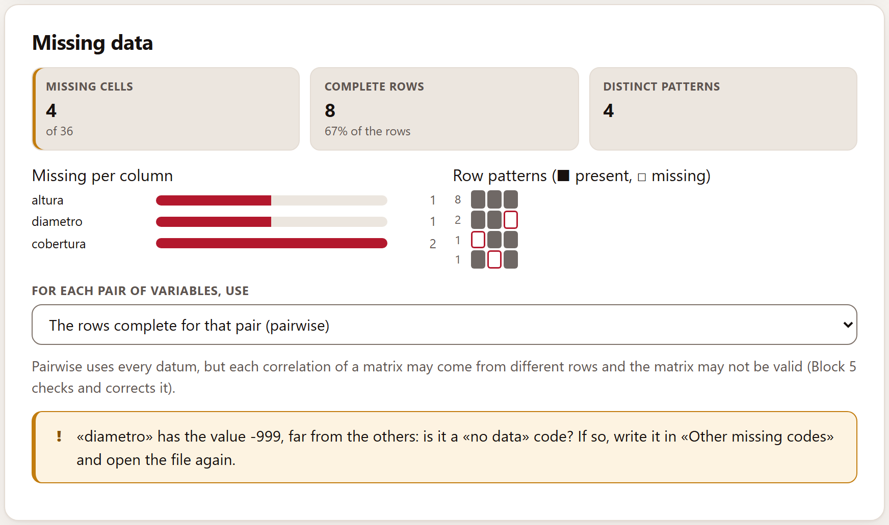
n/d, NA and the empty cell): the app recognized them all. The -999, on the other hand, is not taken as missing without asking: the app warns about it, because it could be a real value.The menu For each pair of variables, use decides what to do with what is missing, and it applies to every block:
| Option | Advantage | Cost |
|---|---|---|
| Pairwise (the default): the complete rows of that pair | Uses every datum | Each correlation of a matrix may come from different rows, and the matrix may not be valid; Block 5 checks and corrects it |
| Listwise: only the rows complete in every column | All the correlations come from the same cases; the matrix is always valid | Rows with a single missing value are lost |
A -999 or a 99 left in as numbers changes any correlation: a single -999 in a column of diameters makes Pearson say whatever that point wants. When the app sees a value like that, far away from the rest, write it in Other missing codes and open the file again.
Each transformation creates a new column and leaves the original as it was; the list below says where each one came from, and Remove deletes it.
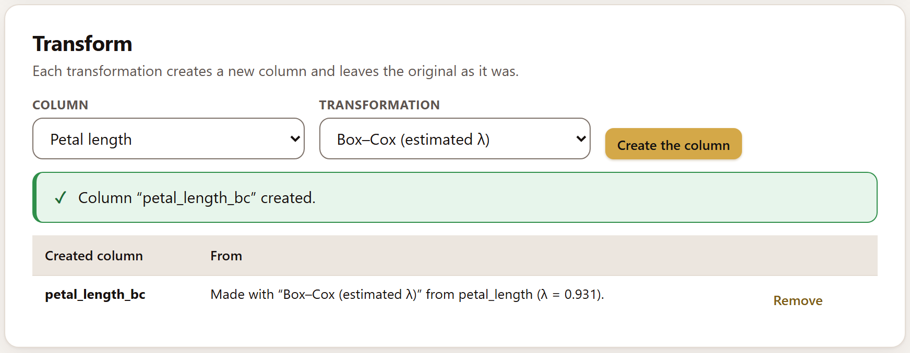
| Transformation | What for |
|---|---|
| Ranks (average for ties) | Working with the order; Pearson on the ranks is Spearman |
| Standardize (z) · Center on the mean | Putting the variables on the same scale; they do not change any correlation |
| Natural logarithm · Base-10 logarithm · log(x + 1) | Multiplicative relations and long right tails; the last one allows zeros |
| Square root · Inverse 1/x | Counts and rates |
| Box–Cox (estimated λ) | The power that brings the variable closest to the normal (Box and Cox, 1964) |
| Normal scores | The ranks turned into normal quantiles: the basis of the Gaussian rank correlation |
| Reverse the scale | Making “more” mean the same thing on two scales |
| Centered log-ratio | The parts of a whole (compositional data), before correlating them |
The menu only offers the transformations that make sense for the chosen column: the logarithm, for example, does not appear if there are zeros or negative values.
Pick two columns in X and Y. The assistant looks at their kind and, if both are continuous, at the shape of their cloud: the outliers (beyond 3.5 on a robust scale), the curvature (the test of a quadratic term), the proportion of ties, r, ρ and the distance correlation. With that it proposes the measures in order, the first as Recommended and the others as Also, each with its reason, the block where it is computed and a What is it? link to its card in the catalog.
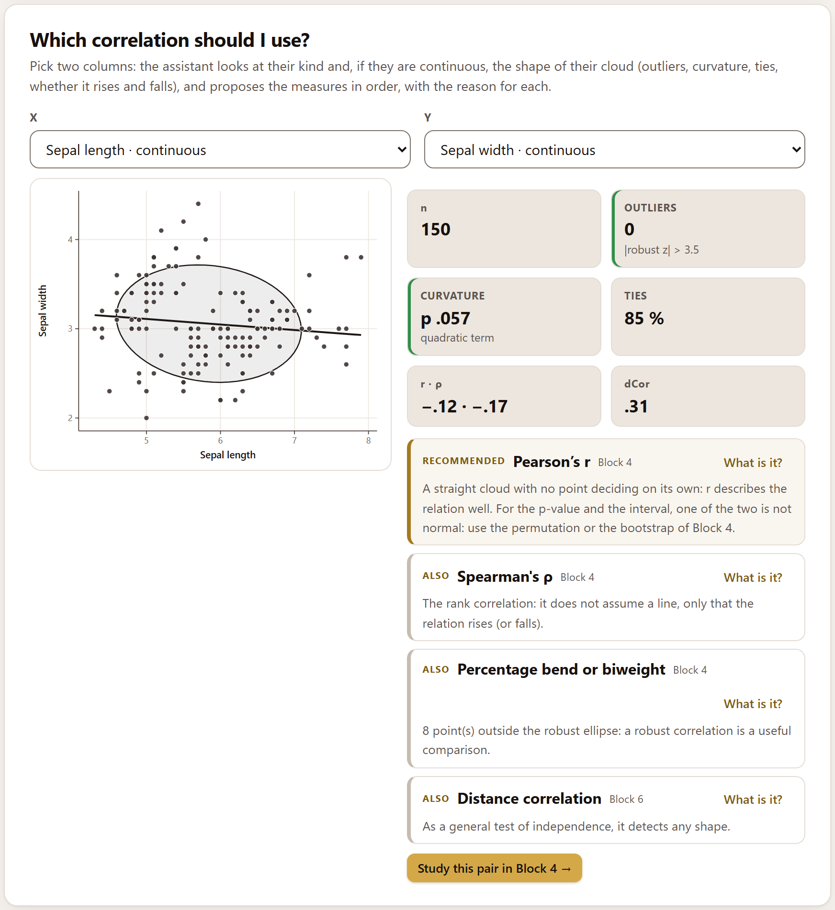
With variables that are not continuous the proposal changes completely. For two binary variables, such as sex and survival on the Titanic, it recommends φ, and as alternatives the odds ratio with Yule’s Q, which do not depend on the margins, and the tetrachoric correlation, if each binary variable is the cut of a latent continuous one. For a continuous and a categorical variable, the point-biserial, the rank-biserial or η; for two ordinal variables, Spearman, τ-b or the polychoric; for angles, the circular correlations; if one column is a subject, the repeated-measures correlation.
If the cloud has outliers, the assistant puts the percentage bend or the biweight first and leaves Pearson as “Pearson’s r (with care)”. If there is curvature, it proposes Spearman and the distance correlation. It does not choose for you: it tells you what to look at, and Block 3 checks it for all the pairs at once.
When the recommendation is computed in Block 4, the button Study this pair in Block 4 → takes the pair there.
Download CSV saves the table as it is now, with the transformed columns, as comma-delimited text that any spreadsheet opens. To save the kinds, the roles, the handling of missing data and the preferences as well, and pick the analysis up another day, there is the project package of Block 13.
| If a column ended up with the wrong kind… | change it: the kind decides which coefficients the other blocks offer. |
| If the app warns about a value very far from the rest… | find out whether it is a missing-value code before going on. |
| If you are going to compare correlations from the same matrix or publish the matrix… | prefer listwise handling of missing data, or check the matrix in Block 5. |
| If the cases repeat (subjects, plots, years)… | mark the column as subject or time: Block 10 needs it. |
A coefficient sums up a cloud of points in a single number, and that number is only faithful if the cloud is what the coefficient assumes. This block looks before measuring: the shape of each variable, of the whole set and of each pair; it searches for outliers, curvature, fanning, points that decide on their own and groups that reverse a relation, and for each pair it says which coefficient describes it best and why.
The block works with the numeric columns—continuous and ordinal—that have the variable role in Block 2. There is nothing to press to compute: every change redoes all the calculations.
The variables appear as buttons. When you open some data the first eight are selected; a click removes or adds one, at least one always stays selected and up to ten fit at once (for more, use the matrix of Block 5). Ordinal variables carry the mark ord., because they change the recommendation for their pairs.
Color by group offers the nominal or binary columns with two to eight categories; if one of them has the group role, it is selected automatically. The group colors the points of every cloud, adds r within each group and turns on the search for Simpson’s paradox. Line in each cloud decides what is drawn in the clouds of the matrix: the LOWESS smoother (the default), the Least-squares line or None.
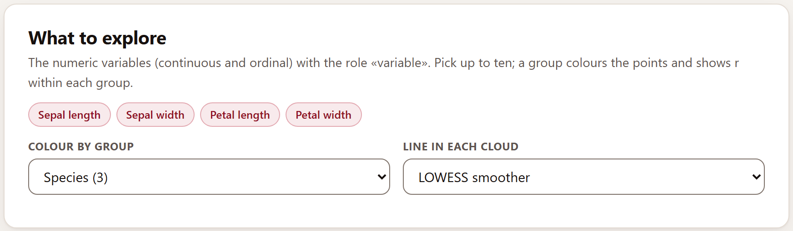
The calculations always use all the rows. To keep the page responsive, the clouds of the matrix draw at most 1,500 randomly chosen points, and a note below says so. With more than 400 rows or more than six variables, a wait indicator appears while the computation runs.
Each pair of variables has two cells. Below the diagonal goes its cloud, with the row variable on the vertical axis and the column variable on the horizontal one, and the chosen line. On the diagonal, the histogram of each variable. Above, Pearson’s r with its stars (* p < .05, ** p < .01, *** p < .001) and, underneath, Spearman’s ρ; the color of r follows the palette chosen in Block 1 and its size grows with |r|, so that strong correlations stand out. With a group, the within-group r values go at the foot of each upper cell, in the color of each group.
A click on an upper or lower cell takes that pair to the section The chosen pair (Section 3.6) and frames it in red in both of its cells; a click on the diagonal takes that variable to Each variable.
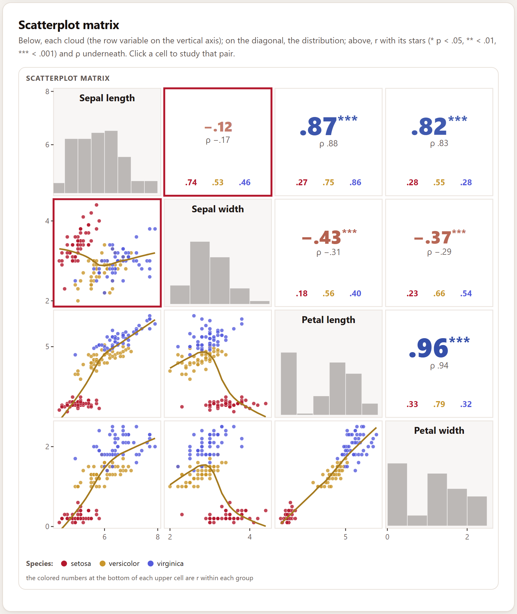
The histogram of petal length has a gap: the setosas, with short petals, sit apart from the other two species. Pooling everything, petal length and petal width give r = .96; within each species, .33, .79 and .32. Almost all of that very high correlation comes from the species differing in size, not from flowers with long petals also having wide ones within a species.
The table Each variable gives, for each one, the number of values, the mean, the standard deviation (SD), the skewness g1 and the excess kurtosis g2, the Shapiro–Wilk test (W and its p-value), the Anderson–Darling test (A² and its p-value), a miniature Q–Q plot and a Reading in words. The p-values are red below .01, amber between .01 and .05 and green from .05 up; g1 is amber if it exceeds 1 in absolute value, and g2 if it exceeds 2.
A click on a row (or Enter on it) draws below it the histogram of that variable with the normal curve of the same mean and SD, and its normal Q–Q plot: if the data were normal, the points would follow the dotted diagonal.
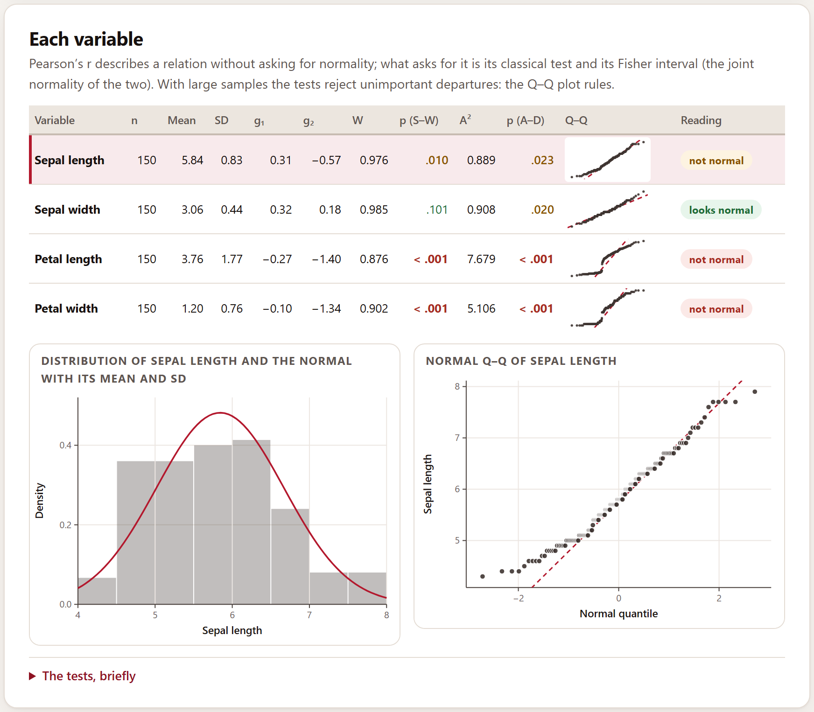
Table 3.1 says when each reading appears. The non-normal ones are red if p < .01 and amber if p is between .01 and .05.
| Reading | When it appears |
|---|---|
| looks normal | the Shapiro–Wilk p-value is .05 or more |
| departs little (large n) | p < .05, but with more than 300 values, |g1| ≤ 1 and |g2| ≤ 2: the test detects a departure that does not matter |
| right-skewed · left-skewed | p < .05 and g1 > 1 · g1 < −1 |
| heavy tails · light tails | p < .05, |g1| ≤ 1 and g2 > 2 · g2 < −2 |
| not normal | p < .05 without a large skewness or kurtosis to explain it (for example, a mixture of groups) |
As a summary of how well a cloud lines up, r assumes nothing. What needs normality—that of the two variables together—is its classical test and its Fisher interval. And with large samples, normality tests reject departures of no practical importance: the Q–Q plot rules. If in doubt, Block 4 gives the permutation p-value and the bootstrap interval, which do not depend on normality.
Shapiro–Wilk (1965) compares the ordered data with what would be expected from a normal; W close to 1 is normal. Its p-value follows Royston’s approximation (1995), valid from 3 to 5,000 values; outside that range the table shows “—”. Anderson–Darling measures the distance between the cumulative distribution of the data and the fitted normal, with more weight on the tails; its p-value is Stephens’s (D’Agostino and Stephens 1986) and needs at least 8 values. The skewness g1 and the excess kurtosis g2 say how it departs: |g1| > 1 or |g2| > 2 already matter for the test of r.
Each variable being normal is not enough: the multivariate normal also requires all their combinations to be normal. This card uses the rows complete in all the chosen variables (it needs at least two variables and four more complete rows than variables) and shows five figures:
Mardia and Henze–Zirkler are computed with up to 2,500 rows. The colored edge of each figure follows the scale of the p-values of the previous table: red, amber or green.
The plot compares the squared Mahalanobis distances of each row—the classical one in gray, the robust one in red—with the quantiles of χ² with as many degrees of freedom as variables; under a normal, the points follow the diagonal. The horizontal dotted line is the χ²(0.975) cut. Beside it, the table Farthest rows (robust distance) gives the eight rows that most exceed the robust cut, with their two distances, and how many more there are. The rows in gray italics are the ones the classical distance does not see: masking.
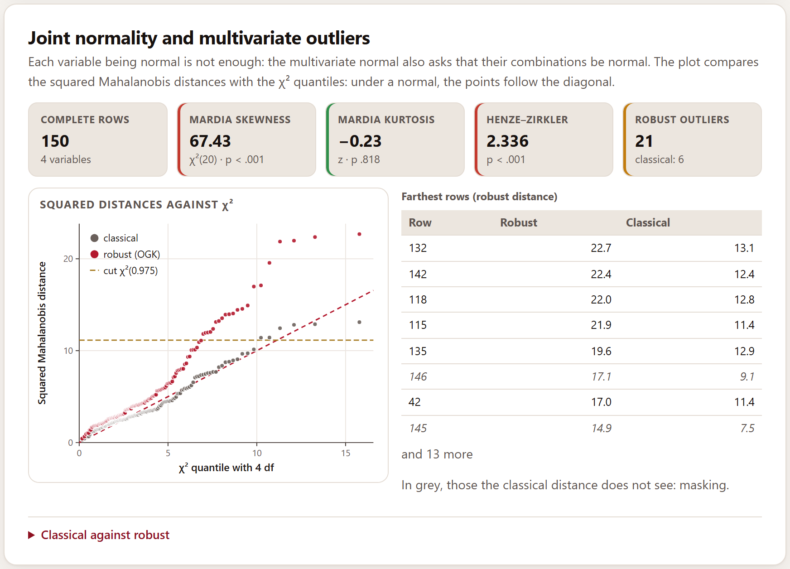
The classical distance uses the mean and covariance of all the data, and outliers inflate them until they hide: this is the masking effect. The robust one uses the orthogonalized Gnanadesikan–Kettenring estimator (Maronna and Zamar 2002) with τ-scales and a reweighting that leaves out whatever exceeds the cut, so that outliers stay far away. Mardia (1970) tests multivariate skewness and kurtosis; Henze and Zirkler (1990) compare the characteristic function of the data with that of the normal, and their test is consistent against any alternative.
Before removing a row, look at it: it may be a data-entry error, a missing-value code or a real and valuable observation. And when different groups are mixed, like the three species of irises, the “outliers” may simply be a group far from the others; in that case, the right thing is to analyze within the groups.
The table Each pair checks all the pairs at once, each with its rows complete in both variables (that is why its n may vary). For each pair it gives n, r and ρ, and four diagnostics:
From them, the table gives the Signals of Table 3.2 and a Recommended coefficient: the one that best describes the pair. A click on a row takes the pair to the next section. A pair with fewer than five complete rows says “too few complete pairs”.
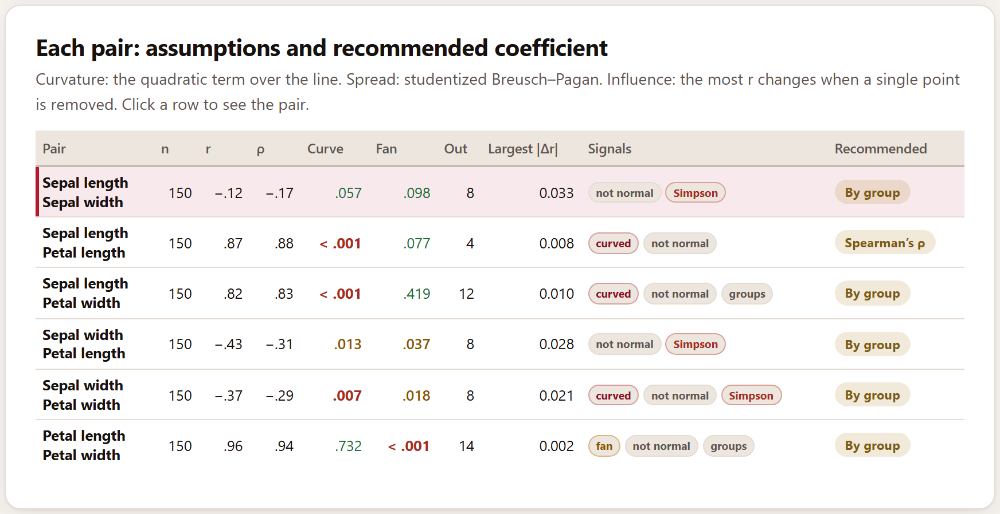
| Signal | Appears when… |
|---|---|
| curved | the quadratic term gives p < .01 |
| fan | Breusch–Pagan gives p < .01 |
| not normal | Shapiro–Wilk gives p < .05 in at least one of the two variables |
| influential point | the largest |Δr| exceeds the limit of Section 3.6 and at least one point lies outside the robust ellipse |
| few values | one of the two takes ten distinct values or fewer |
| not monotonic | the distance correlation exceeds |ρ| by more than 0.25: the cloud rises and falls (computed with up to 2,000 pairs) |
| Simpson | with a group: in at least half of the groups with five cases or more, r has the opposite sign and |r| ≥ .3 |
| groups | with a group and no Simpson: the mean r within groups differs by 0.3 or more from r pooling everything |
The recommendation follows a fixed order: the first rule that holds wins. The reasons for the order are common sense: if the groups change the relation, no coefficient computed by pooling everything describes it; if the cloud rises and falls, no monotonic coefficient sees it; and only when the cloud is straight does it make sense to ask about points that decide on their own.
| # | If… | it recommends |
|---|---|---|
| 1 | there is Simpson or a group effect | By group: analyze within the groups (Block 10) |
| 2 | the relation is not monotonic | dCor or ξ: the distance correlation or Chatterjee’s ξ (Block 6) |
| 3 | at least one of the two is ordinal | Spearman’s ρ, or Kendall’s τ-b if there are ten distinct values or fewer |
| 4 | there is curvature, or r and ρ differ by 0.1 or more | Spearman’s ρ (or τ-b, with few values) |
| 5 | there is an influential point | Percentage bend, a robust correlation (Block 4) |
| 6 | none of the above | Pearson’s r; if one of the two is not normal or there is fanning, with the note to use the permutation or the bootstrap of Block 4 |
The recommendation label is green when it is Pearson’s r with no notes, amber when it is Pearson with a note and gold when the pair calls for another coefficient.
The six annual series of the United States economy from 1947 to 1962 (Figure 3.6) give the three kinds of answer. Eight pairs get Pearson’s r. Three get ρ: two because they curve, and unemployed with armed forces because r = −.18 and ρ = −.34 differ by more than 0.1. And four of the five pairs with the armed forces, which grow suddenly in 1951 with the Korean War and then fall slowly, are “not monotonic”: dCor or ξ.
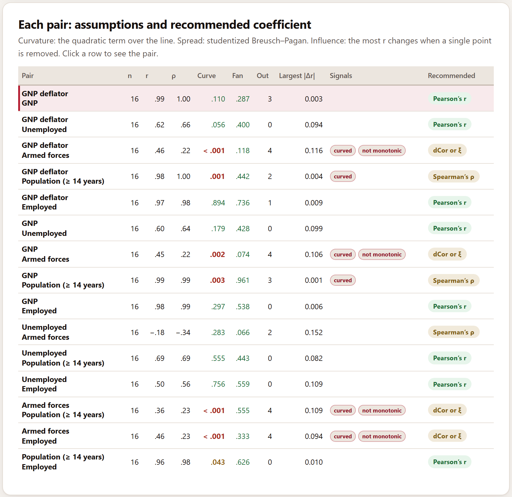
The last card studies one pair: the one chosen in the matrix or in the table, or the one set in X and Y. The orientation matters for the line, the residuals and the Breusch–Pagan test, which are of Y on X; r, ρ and the recommendation are symmetric.
Seven figures sum up the pair: n (and how many rows do not have the pair complete), r with its p-value, ρ, the distance correlation dCor (“any shape”: in the population it is zero only if the two are independent), the Curvature with its F, the Spread (BP) with its χ² and the Largest |Δr| with the row that causes it and the limit. Below, For this pair gives the recommendation with its reason and its notes; if the recommendation is a measure from the catalog, What is it? opens its card.
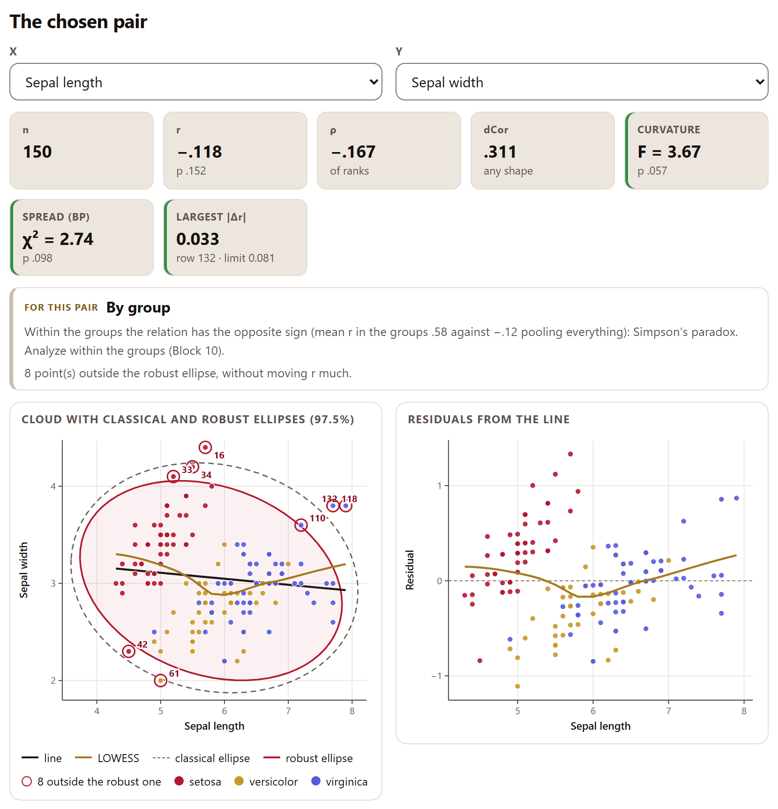
Three plots show why:
The influence limit is, roughly, one standard error of r: a point that by itself moves r more than that decides too much.
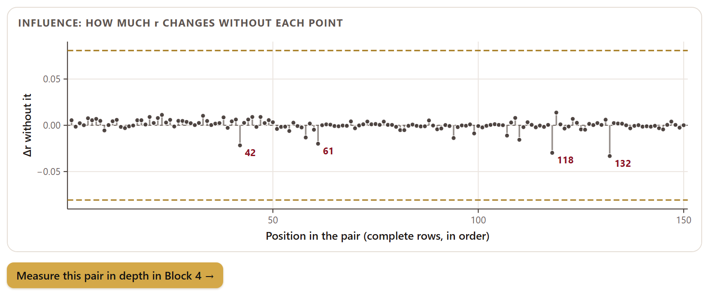
Measure this pair in depth in Block 4 → takes the pair to the block of single-pair measures, with all its coefficients, intervals, permutations and bootstrap. There, the coefficient studied in depth is, until you choose another, the one recommended here; with By group it is Pearson’s r, because the within-group analysis belongs to Block 10.
The speed and braking distance of 50 cars (Ezekiel 1930): r = .807 and ρ = .830; neither curvature (p = .136) nor fanning (p = .073), and the most influential point, row 23, moves r by 0.027, below the limit of 0.050. The recommendation is Pearson’s r, but braking distance is not normal, so the note asks for the permutation p-value or the bootstrap interval.
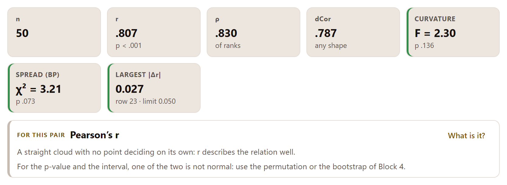
Linearity. r measures only the straight part of the relation; if the cloud curves but keeps rising, ρ or τ measure all of it; if it rises and falls, neither r nor ρ sees it (Anscombe 1973). Constant spread. When the cloud opens like a fan, the standard error of r given by the classical formula is wrong; the permutation p-value and the bootstrap interval do not depend on it. Outliers and influence. A single point can create or erase a correlation; if r changes by more than one standard error when it is removed, that point decides too much. Groups. Pooling groups with different means can inflate, hide or reverse the relation (Simpson 1951). The app carries this same explanation in the collapsible note Why each assumption, at the foot of the card.
The block computes nothing for publication: it decides what to compute. What it finds is used by Block 4, which opens with the recommended coefficient, and by the drafted methods of Block 13, which describe the tests used to check the assumptions and cite their references.
| If the recommendation is By group… | analyze within the groups in Block 10, and do not publish the pooled r without saying so. |
| If it is dCor or ξ… | look at the cloud: the relation rises and falls. Measure it in Block 6; r and ρ near zero do not mean independence. |
| If it is Spearman’s ρ or Kendall’s τ-b… | use it in Block 4; if you report r anyway, say that the relation curves. |
| If it is the Percentage bend… | find the point in the cloud and work out what it is before deciding; compare with the robust coefficients of Block 4. |
| If it is Pearson’s r with a note… | give the permutation p-value or the bootstrap interval from Block 4. |
| If the normality tests reject with a lot of data… | look at the Q–Q plot before switching coefficients. |
These are guides for interpretation, not laws: what you know about the phenomenon, the design and how it was measured always comes first.
Two numeric variables, and everything that can be said about their relation: twelve coefficients with their tests and intervals, the bootstrap and the permutation of the main coefficient, the Bayes factor of Pearson’s r and a reading in words that ends in a sentence ready for the report.
The pair arrives in three ways: from the button Measure this pair in depth in Block 4 → of Block 3, from the assistant of Block 2, or by choosing it here in X and Y. The menus offer the continuous and ordinal columns that are not marked as “not used”.
The first card gathers the eight decisions of the analysis. Every change recomputes everything; if the calculation takes a while (many rows or many resamples), a wait indicator appears.
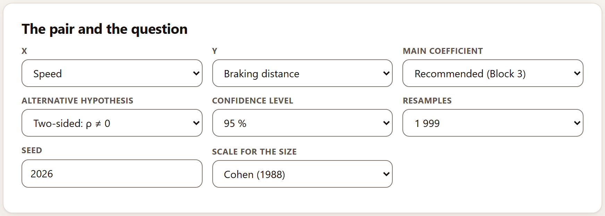
| Scale | Cuts and words |
|---|---|
| Cohen (1988) | negligible < .10 ≤ small < .30 ≤ medium < .50 ≤ large |
| Evans (1996) | very weak < .20 ≤ weak < .40 ≤ moderate < .60 ≤ strong < .80 ≤ very strong |
| Gignac and Szodorai (2016) | very small < .10 ≤ small < .20 ≤ typical < .30 ≤ large |
Cohen’s and Evans’s are general conventions. Gignac and Szodorai’s comes from the correlations actually published in psychology: there, an r of .30 is already large. The best thing is to compare with what is known about the phenomenon in your discipline, and to say in the report which scale you used.
The Result card sums up the analysis in six figures: the main coefficient with the word for its size (and the mark chosen by Block 3 if the assumption check chose it), its confidence interval with the method that produced it, its own test with the statistic and the degrees of freedom, the permutation p-value, the bootstrap interval and the Bayes factor BF10. In the tests, a green edge means significant at the chosen level and amber, not; in the Bayes factor, green is evidence for the correlation and amber, for ρ = 0.
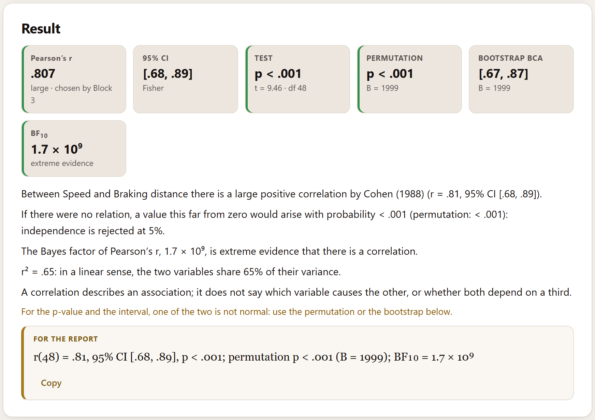
Below, the reading says the same thing in words, in five short paragraphs:
The notes go in amber: those from Block 3 for this pair and, if you chose a coefficient other than the recommended one, which one Block 3 recommends and why.
For the report gives the sentence in the number style chosen in Block 1—“r(48) = .81, 95% CI [.68, .89], p < .001; permutation p < .001 (B = 1999); BF10 = 1.7 × 109”—and Copy puts it on the clipboard.
In the 1947–1962 economy, Block 3 recommends the distance correlation for armed forces with employed, because their cloud rises and then falls (Section 3.5). Here, dCor = .76 with BCa interval [.68, .86] and p < .001 both ways. The Bayes factor, which is always that of Pearson’s r, gives only 1.70: anecdotal evidence. The two figures do not contradict each other: the relation is strong, but it is not a straight line.
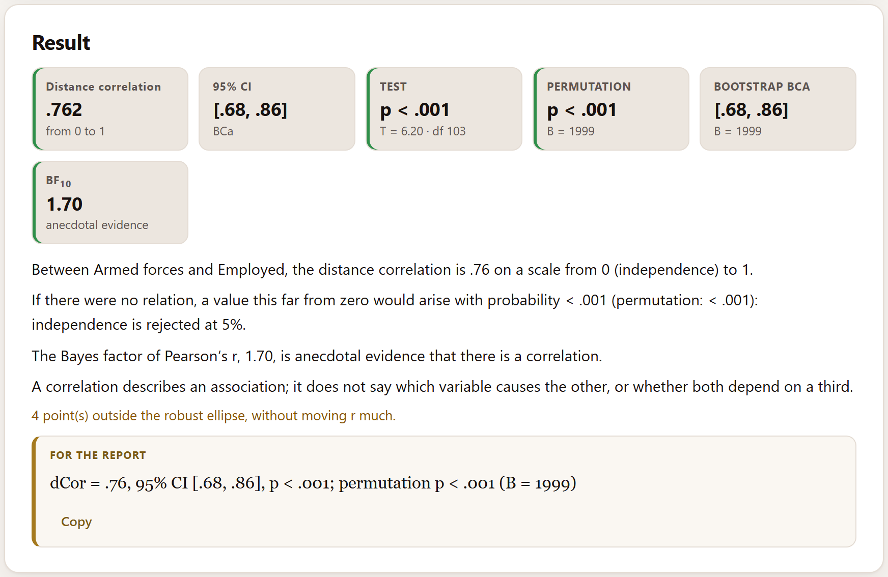
Two plots of the same pair. On the left, the data with the 95% ellipse, the line in black, the LOWESS in gold and, along the axes, a tick for each value. On the right, the same points turned into ranks (divided by n + 1, so that they run from 0 to 1): this is what Spearman’s ρ and Kendall’s τ see. A monotonic but curved relation becomes straight in the ranks; a point very far away in the data becomes just one more in the ranks.
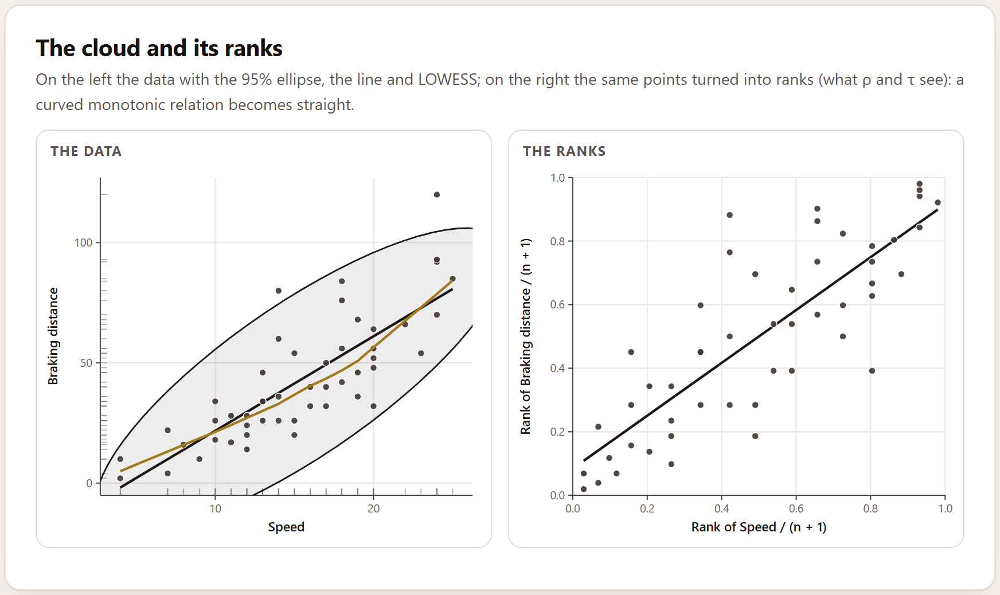
The table computes the twelve coefficients that apply to two numeric variables, each with its own test—exact, asymptotic or by permutation—and its interval: the analytic one where it exists and, where not, a percentile bootstrap with 499 resamples. The main one carries the label main; Make main changes the main coefficient without going back to the menu, and ? opens its card in the catalog. Significant p-values are in green.
With twelve coefficients in view, it is tempting to report the one that gave the highest value or the smallest p. That inflates the results. Choose the coefficient by the shape of the data—which is what Block 3 does—or before seeing them, and report that one; the table serves to see whether the conclusion depends on the choice.
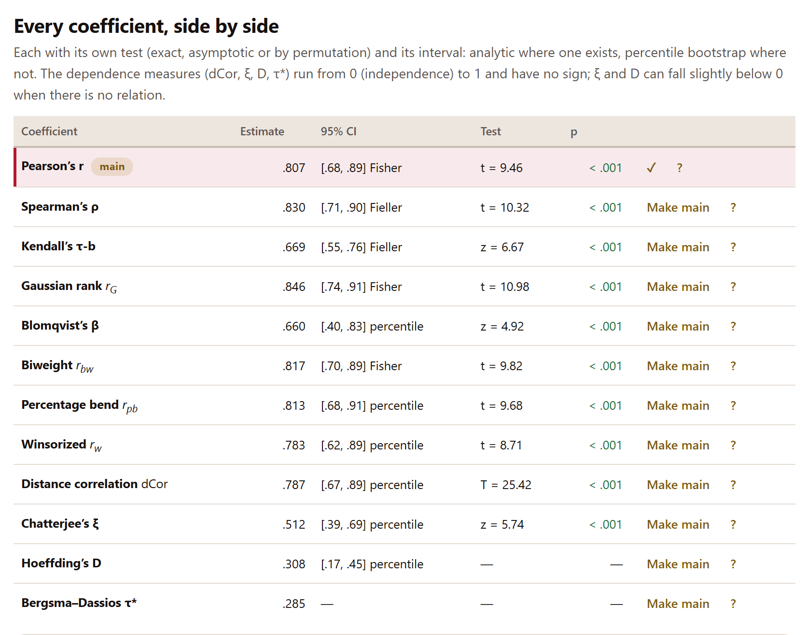
| Coefficient | What it measures | Test · interval |
|---|---|---|
| Pearson’s r | the linear relation | t with n − 2 df · Fisher |
| Spearman’s ρ | the monotonic relation: Pearson on the ranks | exact without ties, otherwise t · Fieller |
| Kendall’s τ-b | the concordance of pairs of observations, corrected for ties | exact without ties (n < 50), otherwise z · Fieller |
| Gaussian rank rG | Pearson on the normal scores of the ranks | t · Fisher |
| Blomqvist’s β | the concordance with respect to the two medians | z · percentile |
| Biweight rbw | robust: gives less weight to data far from the median | t · Fisher |
| Percentage bend rpb | robust: bounds the farthest 20% of each variable | t · percentile |
| Winsorized rw | robust: Pearson after pulling 20% of each tail in to its limit | t with n − 2g − 2 df · percentile |
| Distance correlation dCor | any dependence; 0 only under independence | T with n(n − 3)/2 − 1 df · percentile |
| Chatterjee’s ξ | how much Y is a function of X (it is not symmetric) | z · percentile |
| Hoeffding’s D | the distance between the joint distribution and that of independence (scale 30·D) | — · percentile |
| Bergsma–Dassios τ* | any dependence, with a statistic over all groups of four points; only up to n = 80 | — · — |
The dependence measures (dCor, ξ, D, τ*) run from 0 to 1 and have no sign; ξ and D can fall slightly below zero when there is no relation. D and τ* have no test of their own in the table: when made main, the permutation gives their p-value. The distance correlation is computed with up to 3,000 pairs.
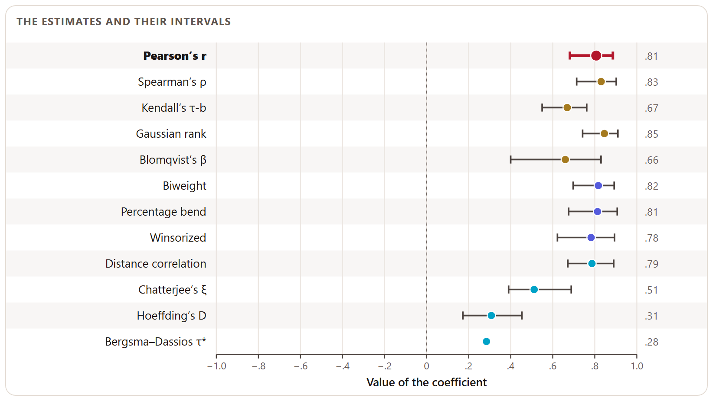
Two ways of doing inference without assuming normality, both on the main coefficient. The bootstrap resamples the pairs with replacement and recomputes the coefficient in each resample; the spread of those replicates imitates that of the coefficient from one sample to another. The permutation shuffles Y against X, which breaks any relation and preserves everything else; its p-value is the proportion of shuffles that give a value as far from zero as the observed one.
Six figures sum up the bootstrap: its standard error, its bias (with the correction z0 and the acceleration a of the BCa) and four intervals: percentile, basic, normal and BCa (the last one when the coefficient is not too costly to recompute). The two plots show the replicates: in the bootstrap one, the band is the BCa interval, the solid line the estimate and the dashed ones the percentile limits; in the permutation one, the solid line is the observed value and the dashed one its mirror image, which also counts in the two-sided test.
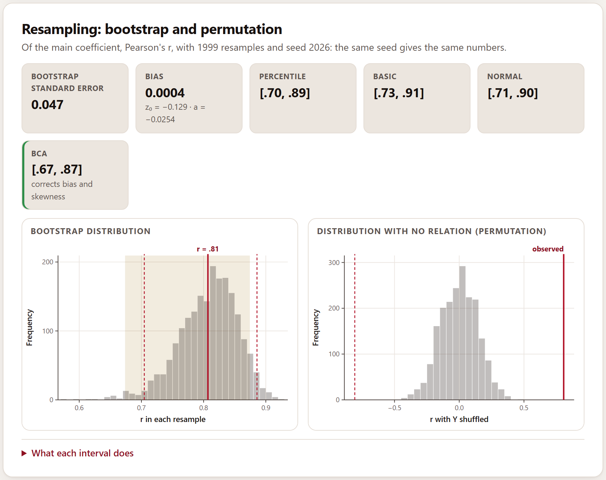
The percentile interval takes the quantiles of the replicates; the basic one reflects them around the estimate; the normal one uses their standard error; the BCa (Efron 1987) also corrects for bias (z0) and for the spread changing with the value (the acceleration a, estimated with the jackknife). With normal data the Fisher interval covers what it promises; with very skewed data it falls short, and the bootstrap ones come closer to the requested level, without quite reaching it with small samples (Bishara and Hittner 2017). The permutation (Pitman 1937) gives p = (k + 1)/(B + 1), where k is the number of shuffles as extreme as the observed value: it never gives zero.
With 1,999 the smallest possible p-value is 1/2000 = .0005, and the interval limits settle at the second digit. For a 99% interval or to publish a p-value close to .05, use 4,999 or 9,999.
The Bayes factor BF10 says how many times more probable the data are if there is a correlation than if ρ = 0; its reciprocal BF01, the opposite. Unlike the p-value, it can give evidence that there is no relation. It is always computed for Pearson’s r, whatever the main coefficient.
The prior distribution of ρ is a beta stretched to the interval from −1 to 1, and Prior (κ) controls its width: κ = 1/3, the common default, κ = 1/√3, wider or κ = 1, uniform (Jeffreys). The figures are BF10, BF01, the two one-sided ones (BF+0 for ρ > 0 and BF−0 for ρ < 0; with a one-sided alternative, only its own), the median and mean of the posterior of ρ and its central credible interval at the chosen level.
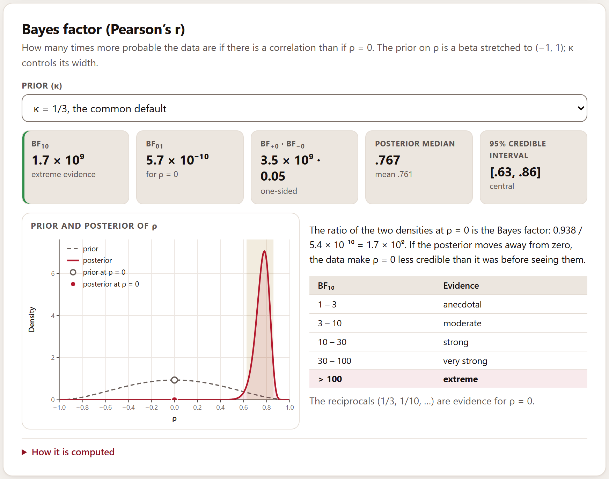
| BF10 | Evidence that there is a correlation |
|---|---|
| 1 to 3 | anecdotal |
| 3 to 10 | moderate |
| 10 to 30 | strong |
| 30 to 100 | very strong |
| more than 100 | extreme |
The reciprocals (from 1/3 to 1, from 1/10 to 1/3 and so on) are the same scale of evidence for ρ = 0.
With the means and variances integrated out under Jeffreys’ priors, the likelihood of ρ depends only on r and n (Ly, Verhagen and Wagenmakers 2016). The Bayes factor is its average under the prior divided by its value at ρ = 0, and it equals the ratio of the prior and posterior densities at ρ = 0 (the Savage–Dickey ratio): these are the two dots on the plot. The app uses that exact form and integrates it numerically, with an adaptive method.
The last card lists the conventions of this calculation: the test and interval of the main coefficient, the bootstrap with its number of resamples and its seed, the permutation with its own (the seed plus one), the prior of the Bayes factor and how many rows were left out because of missing values. It is what the methods section needs, and what Block 13 drafts for you.
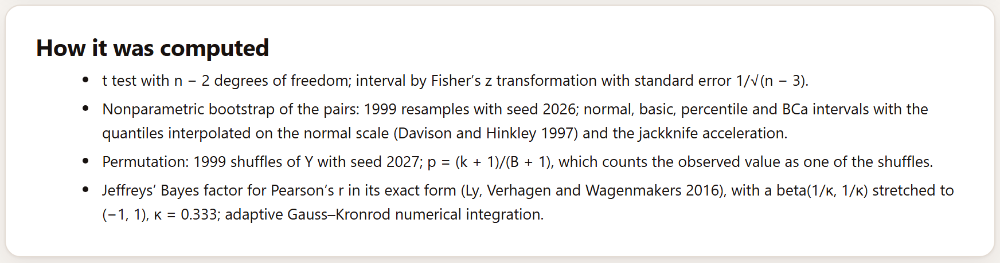
| If the classical test and the permutation agree… | report the classical one; the permutation confirms that it does not depend on normality. |
| If they do not agree… | report the permutation and the bootstrap interval, and say why. |
| If the interval includes both small and large values… | the sample is not enough to know how strong the relation is; say so, even if p is small. |
| If p is not significant… | do not write “there is no relation”: look at the interval and the Bayes factor, which can support ρ = 0. |
| If the main coefficient is not Pearson’s r… | remember that the Bayes factor and r² belong to Pearson, not to the main coefficient. |
| If you used resampling… | report the number of resamples and the seed. |
These are guides for interpretation, not laws: what you know about the phenomenon, the design and how it was measured always comes first.
All the variables against all: the matrix with its tests corrected for multiple testing, the figure for publication with the glyph and the order that read it best, the diagnosis that says whether the matrix is fit for what follows—regression, factor analysis, simulation—, the KMO and Bartlett’s test, and the table of means, standard deviations and correlations ready for the article.
The numeric columns—continuous and ordinal—with the variable role come in. When you open some data all of them are selected; a click removes or adds one (at least two always remain) and all puts them all back.
Coefficient offers eleven of the twelve coefficients of Block 4 (all except τ*, which is too slow for a matrix). Multiple-testing correction and α decide which cells count as significant (Section 5.3). Each cell uses the rows complete in its two variables, unless listwise handling of missing data was chosen in Block 2.
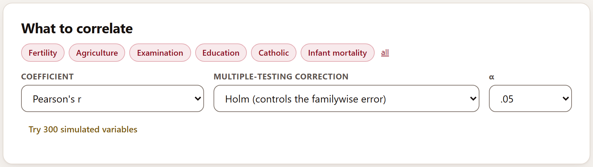
The distance correlation stores n × n matrices and is computed with up to 3,000 rows. The distance correlation, Hoeffding’s D and Chatterjee’s ξ allow up to 60 variables when there are more than 300 rows. With more than 30 complete variables, Pearson and Spearman are computed as products of standardized columns, with the p-values of the t approximation, and a message says so.
The figure has two halves. Below and Above choose the glyph for each one among the nine of Section 1.5—ellipse, circle, moon, pie, square, bar, shade, color and number—or Nothing; when you change it, the shape glyphs morph into the new one. The color follows the palette chosen in Block 1, and the bar on the right gives its scale from −1 to 1.
Hovering the pointer over a cell shows its two variables, its value, its corrected p and its n. A click selects it: it is framed in both halves, a line below gives its uncorrected and corrected p, and Study the chosen pair in Block 4 → takes that pair to Block 4.
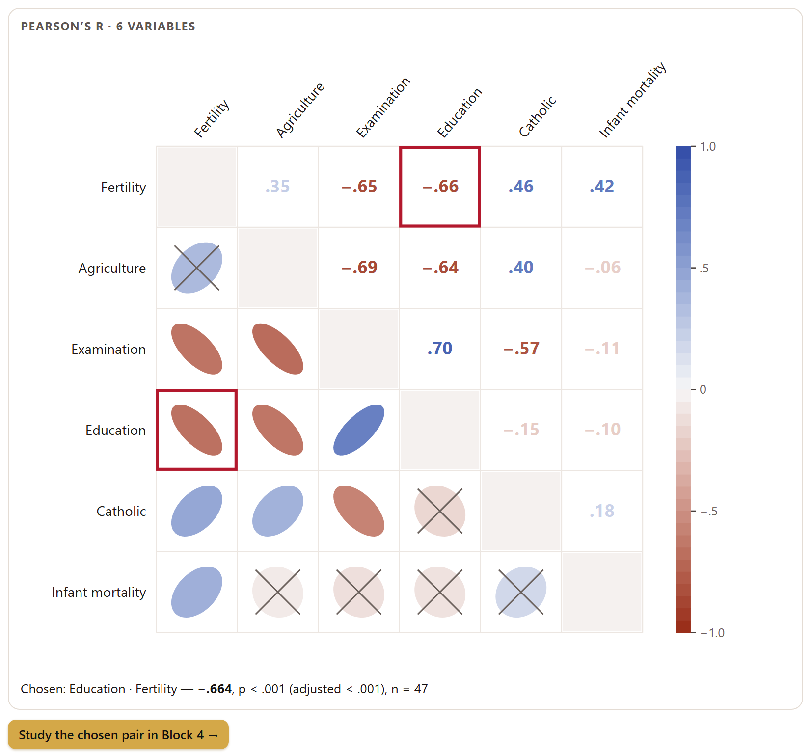
Each glyph encodes r in a different way: the ellipse is the shape of a cloud with that correlation (Murdoch and Chow 1996), the moon and the pie show |r| as a fraction, color and shading (Friendly 2002) read well from a distance and the number is exact. A good arrangement combines two: a glyph that reads at a glance in one half and the number in the other. The order matters as much as the glyph: grouping similar variables reveals blocks that the order of the data hides.
With p variables there are p(p − 1)/2 tests: with six variables, fifteen; with thirty, 435. Without correction, at 5% false positives are expected even if no variable is related to any other: one in every twenty pairs, on average. The corrections adjust the p-values of the whole family of tests.
| Correction | What it controls |
|---|---|
| Holm (the default) | the probability of having at least one false positive in the whole matrix (the familywise error), with more power than Bonferroni and no assumptions |
| Benjamini–Hochberg | the expected proportion of false positives among the significant cells (the false discovery rate); more powerful when there are many tests |
| Benjamini–Yekutieli | the same rate, valid under any dependence between the tests; more conservative |
| Hochberg · Hommel | the familywise error, with somewhat more power than Holm; they assume that the tests are independent or positively associated |
| Bonferroni | the familywise error, by multiplying each p by the number of tests: the simplest and the most conservative |
| None | nothing: each cell with its own p |
If the question is confirmatory (“are these correlations real?”), use Holm. If it is exploratory (“which pairs are worth following up?”), Benjamini–Hochberg. What is not acceptable is to try several and keep the one that gives the most stars. And always state in the report which one you used: the table to publish puts it in its note.
This view removes all the other variables at once. To control for only some of them, with their interval and their robust version, there is Block 7.
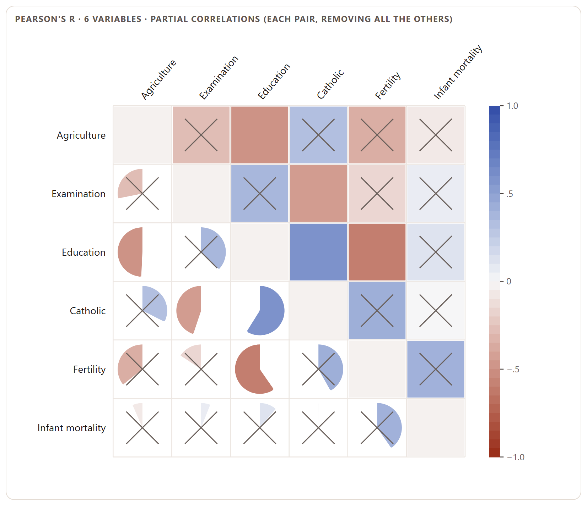
A correlation matrix must be positive definite: all its eigenvalues greater than zero. Computed cell by cell it may not be—with pairwise missing data, with robust coefficients or with more variables than rows—, and then it cannot be used for regression, factor analysis, structural equations or simulation. The card gives five figures: whether it is positive definite (and, if not, how many eigenvalues are negative or zero), the smallest and largest eigenvalue (with the share of the variance taken by the largest), the condition number—above 1,000 the matrix is nearly collinear—and the logarithm of the determinant.
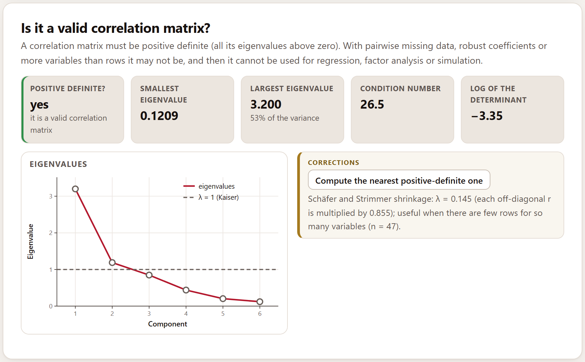
The eigenvalue plot helps to see how many dimensions the data have. On the right, the Corrections: Compute the nearest positive-definite one applies Higham’s algorithm (2002), with up to 150 variables, and states how many iterations it used, the Frobenius distance to the estimated matrix and the largest change in a single cell; the Schäfer and Strimmer shrinkage gives its λ and the factor by which each correlation is multiplied.
| If missing data are handled pairwise… | try listwise handling in Block 2; if things change a lot, the missing values are not at random. |
| If the coefficient is robust… | use the nearest one, and say in the report that you used it and how much it changed. |
| If there are more variables than rows… | the matrix is necessarily singular: use the shrunk one, or reduce the variables. |
| If the largest change of the nearest one is large (more than .05)… | the estimated matrix has a deeper problem: check the data before going on. |
Before a factor analysis it is worth knowing whether the variables share anything. The Kaiser–Meyer–Olkin measure (KMO) compares the correlations with the partial ones: if the partials are small compared with the correlations, the variables share factors. It is given for the whole matrix and, as MSA, for each variable (up to 60 variables). Bartlett’s test asks whether the matrix is the identity, that is, whether nothing correlates; it uses the smallest n in the matrix. Both require a positive-definite matrix.
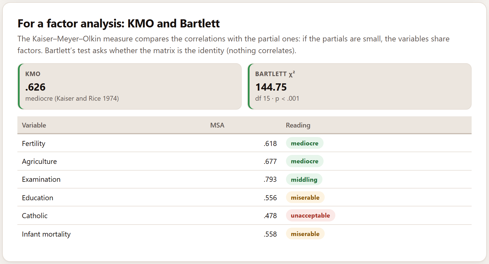
| KMO or MSA | Reading |
|---|---|
| .90 or more | marvelous |
| .80 to .90 | meritorious |
| .70 to .80 | middling |
| .60 to .70 | mediocre |
| .50 to .60 | miserable |
| less than .50 | unacceptable |
In the table for each variable, the labels are green from .60 up, amber between .50 and .60 and red below. An unacceptable variable is the first candidate to be left out of the factor analysis.
The classic table of an article: each variable numbered with its mean (M) and its standard deviation (SD), and below the diagonal the correlations with stars according to the corrected p. The footnote gives the n (or its range, with pairwise missing data) and the correction used. The numbers follow the style of Block 1. It is built with up to 30 variables, and it shows whichever matrix is selected in Show.
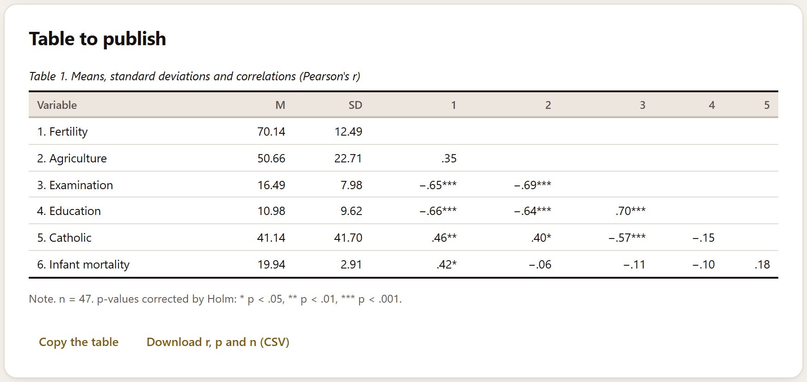
Download r, p and n (CSV) saves one line per pair with its two variables, r, the uncorrected p, the corrected p and the n: what you need for supplementary material or for another program, with any number of variables.
With more than 40 variables the figure drops the glyphs and becomes a canvas of colors, one cell per pair. When you hover the pointer, a magnifier shows the numbers of the 9 × 9 window of cells around it, and a line below gives the pair, its value, its corrected p and its n; a click selects the pair. Ordering by clustering is what makes a large matrix readable. Try 300 simulated variables opens a set of 300 variables and 120 rows in six modules—simulated, not real data—to try it out.
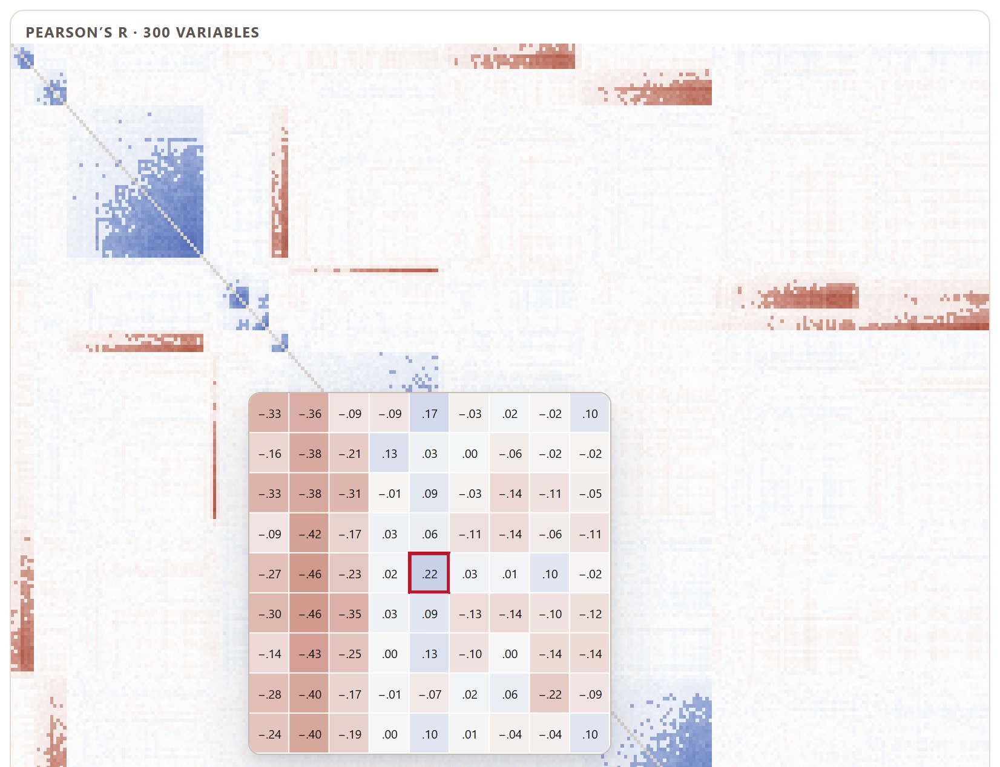
The diagnosis is computed with up to 400 variables. With 300 variables and only 120 rows, the matrix cannot be positive definite: it has 181 zero eigenvalues (300 minus 119), its condition number is infinite and the nearest one is not computed with so many variables. For a case like this there is shrinkage: λ = 0.199 multiplies each correlation by 0.801 and leaves a valid matrix.
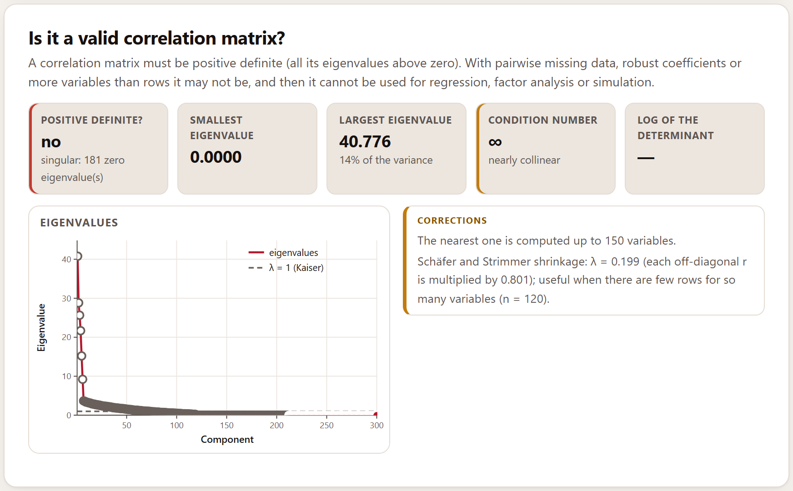
Pearson’s r measures straight lines, and Spearman’s ρ measures curves that always go up or always go down. A U-shaped, bell-shaped or cyclic relation escapes both. This block gathers the measures that are zero only when there is no relation at all, sweeps every pair to find the ones Pearson misses, and fits five copulas that tell you whether extreme values happen together.
You choose two numeric variables in X and Y, and the block computes nine figures at once: Pearson’s r, Spearman’s ρ and the dependence measures that see any shape. Kendall’s τ appears in the chart of Section 6.2.
At least 10 complete pairs are needed. Permutations for MIC computes the p-value of MIC by shuffling Y 199, 499 or 999 times; since MIC is slow, it is off by default (Do not compute its p-value). With more than 250 rows, or with permutations, a waiting screen appears.
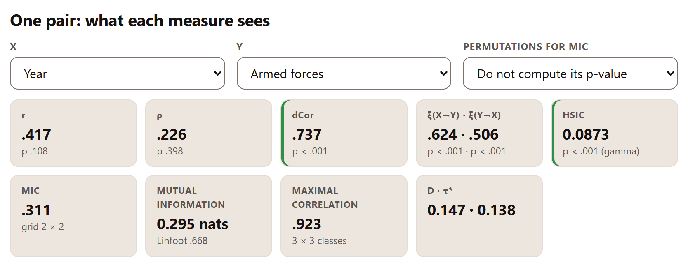
| Measure | What it measures | Test · limit |
|---|---|---|
| r, ρ, τ | the linear part (r) and the monotonic part (ρ, τ) of the relation | those of Block 4 |
| dCor | any dependence; in the population it is 0 only under independence (Székely, Rizzo and Bakirov 2007) | T · up to 3,000 rows |
| ξ(X→Y) · ξ(Y→X) | how much Y is a function of X, and the other way around: it is not symmetric (Chatterjee 2021) | z · no limit |
| HSIC | dependence measured in a space of functions, with Gaussian kernels (Gretton et al. 2005) | gamma approximation · up to 1,500 |
| MIC | the largest mutual information a grid can capture, normalized so that a noiseless function of any shape scores 1 (Reshef et al. 2011) | permutation, if requested · up to 1,200 |
| Mutual information | how much uncertainty about Y is removed by knowing X, in nats; Linfoot’s coefficient puts it on the scale of a correlation (Kraskov, Stögbauer and Grassberger 2004) | — · up to 3,000 |
| Maximal correlation | the largest r obtained by transforming X and Y with any function (Gebelein 1941; Rényi 1959), on quantile classes | — · no limit |
| D · τ* | Hoeffding’s D and the τ* of Bergsma and Dassios, as in Block 4 | — · τ* up to 80 |
The nearest-neighbor estimator measures distances with the maximum norm, so the app standardizes both variables first: in their own units, the one with the larger spread would decide on its own which points are neighbors. Linfoot’s coefficient, √(1 − e−2I), equals |ρ| when both variables are normal.
On the left, the cloud with the straight line and the LOWESS curve. On the right, the nine measures on a single scale from 0 (independence) to 1, in the color of their family: r in red, the rank-based ones in gold, the dependence measures in turquoise and the maximal correlation in violet. When the dependence measures lie far to the right of |r|, there is a relation that a straight line does not see.
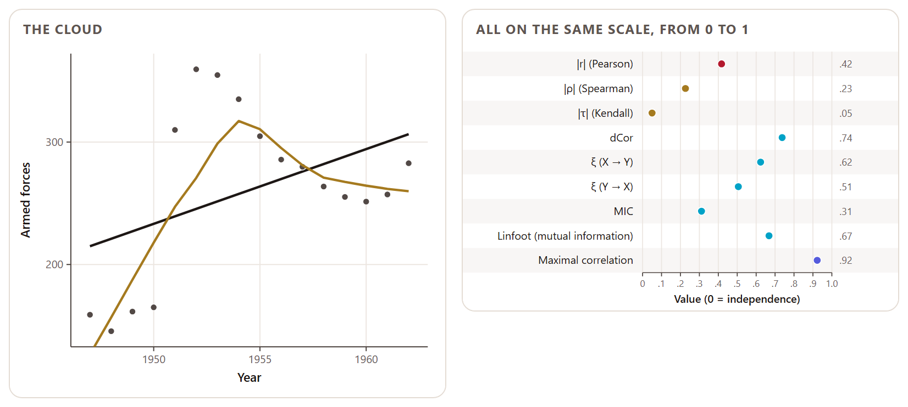
Below, the reading in words compares the distance correlation with |r|: if it exceeds it by more than 0.2, there is dependence that a straight line does not capture; if not, nearly all the dependence detected is also captured by a line. If the two ξ differ by more than 0.15, it says so and explains in which direction the dependence is stronger: in a parabola, Y is a function of X but not the reverse. It also gives the MIC nonlinearity index, MIC − r².
With the 16 years of this example, MIC can only use a 2 × 2 grid, and the maximal correlation three classes per variable, which tend to give high values. The distance correlation, ξ and HSIC work well with few data and come with their own test; MIC and mutual information need at least about 50.
MIC tries many grids over the cloud—from 2 × 2 up to those with as many as n0.6 cells—and in each one it measures the mutual information between the column and the row each point falls in, normalized by the logarithm of the smaller side. The characteristic matrix shows that value for each combination of columns and rows; MIC is its maximum, framed in red. With very few data only the 2 × 2 grid fits, and the app says so instead of drawing a one-cell matrix.
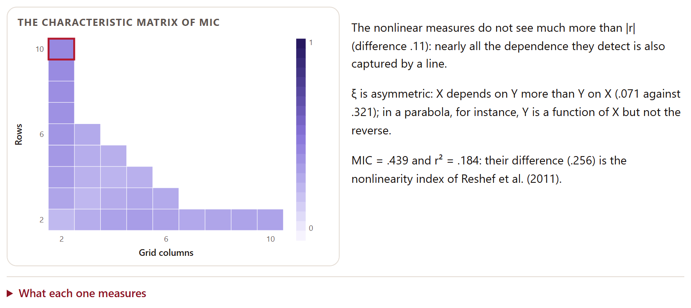
The distance correlation compares the distances between all pairs of points in X with those in Y; HSIC does the same with the similarities given by a Gaussian kernel, whose width is set by the median of the distances. Both are zero only under independence. ξ sorts the data by X and looks at how much the ranks of Y jump from one neighbor to the next: if Y is a function of X, they hardly jump. MIC and mutual information come from information theory; the maximal correlation, from searching for the best transformations of the two variables.
Sweep computes, for every pair of numeric variables (up to 30 variables), r, ρ, the distance correlation and ξ in its stronger direction, and sorts them by dCor − |r|: curved, U-shaped or cyclic relations rise to the top. Include MIC (slower) adds MIC and MIC − r². The first six pairs appear as cards with a miniature cloud; the table shows up to 40, with the difference in amber when it exceeds 0.2. A click on a card or a row takes that pair to the study of Section 6.1.
A matrix of 20 variables has 190 pairs, and nobody looks at 190 clouds. The sweep brings forward the few pairs on which a Pearson matrix—the one in Block 5—is misleading, because it says “little relation” where there is a lot. Those pairs deserve a cloud in the report, and a dependence measure instead of r.
Sklar’s theorem (1959) separates each variable from its dependence: when the data are turned into ranks divided by n + 1—the pseudo-observations—only the copula remains, the dependence without the marginals. Two pairs with the same Kendall’s τ can have very different copulas, and the difference lies above all in the tails: do extreme values happen together?
The block fits five families to the chosen pair, each with two estimates of its parameter θ: the one given by inverting Kendall’s τ and the maximum pseudo-likelihood one (Genest, Ghoudi and Rivest 1995). It gives their log-likelihood, their AIC—the one with the lowest AIC carries the label lowest AIC—and their lower and upper tail dependence. Clayton and Gumbel are fitted only with positive dependence.
| Family | Tails |
|---|---|
| Gaussian | no tail dependence: the extremes become independent |
| Student t | the same dependence in both tails, larger the fewer the degrees of freedom (ν) |
| Clayton | dependence at the bottom: low values happen together |
| Gumbel | dependence at the top: high values happen together |
| Frank | no tail dependence, symmetric; allows negative dependence |
Below, four figures give the tails of the data themselves: the probability that Y is in its lower 10% when X is, the same for the upper 10%, what both would be if the variables were independent (0.1), and the Kendall’s τ that fixes each family.
Upper tail dependence λup is the limit of the probability that V exceeds u when U exceeds u, as u approaches 1 (Joe 1997); the lower one is the same at the bottom. It matters for risk: if the droughts of two regions, the falls of two prices or the pests of two crops share a tail, they happen together more often than a Gaussian with the same correlation would suggest. Inverting τ gives a starting value that does not depend on the marginals; the pseudo-likelihood refines it.
| If dCor is much larger than |r|… | look at the cloud and report a dependence measure, not r; describe the shape in words. |
| If the two ξ differ a lot… | one variable is nearly a function of the other, but not the reverse: say in which direction. |
| If there are fewer than about 50 data… | rely on dCor, ξ and HSIC; take MIC, mutual information and the maximal correlation as a guide. |
| If the best copula has a tail… | extremes happen together: keep it in mind in any simulation or risk analysis. |
| If two families are close in AIC… | the data are not enough to choose: with few data, the empirical tails rest on very few points. |
These are guides for interpretation, not laws: what you know about the phenomenon, the design and how it was measured always comes first.
Two variables are almost never alone. This block removes the effect of third variables (partial and semipartial correlation), measures how much several variables together explain of one (multiple correlation, with the breakdown of its R²) and correlates groups of variables with each other: canonical correlation, the RV coefficient, Procrustes, the Mantel test and co-inertia.
How much of the relation between X and Y is left once you remove what both share with Z? The partial correlation removes Z from both; the semipartial, from Y only.
You choose X, Y and the Coefficient—Pearson, Spearman or Kendall—and one or more variables in Control for (Z). The figures are the uncontrolled correlation, the partial with its test, the semipartial, the partial distance correlation (Székely and Rizzo 2014), which removes Z without assuming linearity, with its permutation p-value (up to 800 rows), and the number of controls with the degrees of freedom, n − 2 − k.
The two charts are the key to the partial correlation. On the left, the usual cloud; on the right, the added-variable plot: the residuals of X and of Y after removing what Z predicts. With Pearson, the partial is exactly the r of that second cloud. Below, a reading says what controlling did: whether the relation drops to less than half, whether it changes sign or grows (a suppression effect), or whether it changes little.
A relation that drops when you control for Z may mean two opposite things: that Z is a common cause of X and Y (and the original correlation was partly spurious) or that Z is the path through which X acts on Y (a mediator). And if Z is a consequence of both—a collider—controlling for it creates a correlation that does not exist. Choose the controls by what you know about the phenomenon, not by how they change the result.
The correlation between Y and the best linear combination of several X: the R of a multiple regression. You choose Y and, in Predictors (X), the others. Four figures summarize it: R, R² with its version adjusted for the number of predictors, the F test that all the coefficients are zero, and the shared part of R², the part that belongs to no predictor in particular.
The table gives, for each predictor, its simple correlation r with Y, its standardized coefficient β with its t test, its squared semipartial sr²—what R² would lose if that predictor were removed—and its structure coefficient, r/R, the correlation of the predictor with the prediction. The chart splits R² into what is unique to each predictor and what is shared.
In Figure 7.2, agriculture has r = .353 with fertility—the more agricultural districts have more children—but β = −.313. It is not a mistake: among districts with the same education, the same examination scores, the same proportion of Catholics and the same mortality, more agriculture goes with somewhat lower fertility. The simple correlation was loaded by education, which is lower in the agricultural districts. That is why a β is not interpreted without also looking at r and the structure.
With two sets of variables, canonical correlation (Hotelling 1936) looks for the linear combination of each set that correlates most with one of the other; then the next one, independent of the first, and so on up to the size of the smaller set. The sets are built with the buttons of Set A (in red) and Set B (in gold); a variable cannot be in both. There must be more rows than variables in total.
The table gives each canonical correlation with three tests: Wilks’ lambda (with Rao’s F), the Hotelling–Lawley trace and the Pillai–Bartlett trace. Each row tests whether the dimensions from that one to the last are zero: if the first row is significant and the second is not, only the first dimension is real. Below comes Roy’s largest root, which is an upper bound and therefore tends to reject too often. The cloud shows the first pair of canonical variates; the circle of correlations places each variable according to its correlation with the first two canonical variates of its set (the structure loadings).
With the same sets A and B, four measures that do not look for linear combinations but compare the two whole tables. All of them use the standardized variables, and the first three come with a permutation test: 999 shuffles of the rows (fewer with more than 300 rows).
Canonical correlation looks for linear combinations and breaks down with many variables and few rows; RV summarizes the whole table and is the basis of co-inertia; Procrustes compares configurations, for example two ordinations of the same sites; Mantel is useful when what you have are distances—genetic, geographic, ecological—although its power is low and it does not correct for spatial autocorrelation (Guillot and Rousset 2013; Legendre, Fortin and Borcard 2015).
| If the relation drops a lot when controlling for Z… | decide, from what you know, whether Z is a common cause (the relation was spurious) or a mediator (the partial is the direct effect). |
| If the relation grows or changes sign when controlling… | there is suppression: report both, the simple and the partial. |
| If R² is high but no β is significant… | the predictors share almost everything: look at the shared part and the structure, not only at the β. |
| If only the first canonical dimension is significant… | interpret only that one, with the circle of correlations. |
| If there are almost as many variables as rows… | use RV or Procrustes instead of canonical correlation. |
These are guides for interpretation, not laws: what you know about the phenomenon, the design and how it was measured always comes first.
Not everything is measured with numbers. This block analyzes the association in a contingency table—with its test, its mosaic and some twenty measures—, the relation between a continuous and a categorical variable, the latent correlations (tetrachoric, polychoric and polyserial) and the heterogeneous matrix, in which each pair gets the coefficient its types call for.
You choose the Rows and the Columns among the binary, nominal or ordinal variables (from 2 to 30 categories; the number appears in parentheses), and the app builds the contingency table.
In each cell decides what is shown: the Count, the Row %, the Column % or the Standardized residual (Haberman’s adjusted residual). Whatever the choice, the background of each cell tells you whether it has more cases than there would be if the two variables were independent (blue) or fewer (red), when the adjusted residual exceeds 1.96, and it is more intense when it exceeds 2.58. If any expected frequency is below 5, a note warns you and asks for the exact or Monte Carlo p-value.
In the mosaic each row of the table is a horizontal band, with a height proportional to its total, and within it each column takes up the width of its proportion. The color is the Pearson residual of the cell, in the palette of Block 1: blue when there are more cases than expected, red when there are fewer.
Below come the main figures: Pearson’s χ² with its degrees of freedom, the likelihood ratio G², Fisher’s exact p-value (in 2 × 2 tables, with Yates’ corrected χ²) or the Monte Carlo one with 1,999 tables (in larger tables, with up to 5,000 cases), and the bias-corrected Cramér’s V. The χ² says whether there is association; the measures say how much.
| Measure | What it says |
|---|---|
| Cramér’s V | the strength of the association, from 0 to 1, for any table; the corrected one (Bergsma 2013) removes the upward bias of small samples |
| Contingency C | Pearson’s measure; it never reaches 1, and the app gives its largest possible value for that table |
| Tschuprow’s T | like V, but it reaches 1 only in square tables |
| Goodman–Kruskal λ | how much the error of guessing one variable by its most common category drops when you know the other; in both directions and symmetric |
| Goodman–Kruskal τ | the same, but guessing at random with the proportions; in both directions |
| Theil’s U | the part of the uncertainty (the entropy) of one variable removed by the other; in both directions and symmetric |
| γ, Somers’ d, τ-b, τ-c | with ordered categories (none nominal): the concordance in the order. γ ignores ties and therefore exaggerates; τ-c suits rectangular tables |
| Polychoric | if each variable is the cut of a latent normal, the correlation of those normals, with the test that the normal model fits |
With 2,201 people, a tiny association already gives p < .001. The p-value of χ² does not measure strength: always report a measure—the corrected V, a λ, an odds ratio—and the percentages that explain it.
When both variables are binary, the measures specific to the 2 × 2 table appear: φ, which is Pearson’s r of two variables coded 0 and 1; the odds ratio with its Woolf interval, which does not depend on the marginals; Yule’s Q and Y, which bring the odds ratio to the scale from −1 to 1; the relative risk; and the tetrachoric correlation.
The odds ratio, the relative risk, φ and the tetrachoric compare the first category with the second in the order of the table. Here sex goes “Male, Female” and survival “No, Yes”: that is why φ is positive (being a woman goes with surviving). If you reverse the order of a variable in Block 2, the sign changes, not the strength.
φ measures the association of the two binary variables as they are. The tetrachoric assumes that each binary variable is the cut of a continuous normal variable—the propensity to survive, for example—and estimates the correlation of those two normals; that is why it is larger (.698 against .456). Use it only if that latent variable makes sense; for two genuine categories, such as sex, φ or the odds ratio are more honest.
You choose a Continuous and a Categorical variable. The correlation ratio η is always computed, with its η² and its F test (that of the one-way analysis of variance): what part of the variation of the continuous variable the categories explain. Depending on the type of the categorical variable, others are added:
When the data mix types, a Pearson matrix treats as numbers what are not numbers. The heterogeneous matrix gives each pair the coefficient its types call for, and a letter in the corner of each cell tells you which one it was:
| Pair of types | Letter | Coefficient |
|---|---|---|
| continuous and continuous | P | Pearson’s r |
| continuous and ordinal or binary | S | polyserial |
| ordinal or binary with ordinal | C | polychoric |
| binary and binary | T | tetrachoric |
| nominal and continuous | η | correlation ratio |
| nominal and categorical | V | bias-corrected Cramér’s V |
The buttons at the top choose the variables, with their type beside them (at first, the first twelve). Since η and V have no sign, a note reminds you that, mixed with the others, they do not form a positive definite correlation matrix: the heterogeneous matrix is for description. For a factor analysis of ordinal variables, the right choice is a matrix of polychorics only.
| If there are expected frequencies below 5… | report Fisher’s exact p-value (2 × 2) or the Monte Carlo one. |
| If the table is 2 × 2… | report the odds ratio with its interval, and the percentages of each group. |
| If you want to predict one variable from the other… | use an asymmetric measure (λ, τ or U) in that direction. |
| If the categories are ordered… | use τ-b or the polychoric; V ignores the order. |
| If the tetrachoric or the polychoric turn out very different from φ or V… | remember that they assume a latent normal: say whether that assumption is reasonable. |
These are guides for interpretation, not laws: what you know about the phenomenon, the design and how it was measured always comes first.
Sometimes the question is not whether two measurements move together, but whether they say the same thing: two instruments, two laboratory methods, several raters scoring the same cases. Correlation is no use for that. This block computes Lin’s concordance, the Bland–Altman plot, the six intraclass coefficients, κ with its variants and relatives, and Krippendorff’s α.
The data come with one row per case and one column per rater, instrument or method. In What is compared you choose two or more columns that measure the same thing on the same cases.
If all the chosen columns are continuous, the block shows the concordance, the Bland–Altman plot of the first two and the intraclass coefficients of all of them. If all are categorical (binary, nominal or ordinal), it shows κ and its relatives; the columns must have the same categories, because they are compared by their position on the scale. If the two types are mixed, a message asks you to remove those of one type.
Besides the Simulated raters, the block offers a real set: the extra sleep gained by ten patients with two drugs (Cushny and Peebles 1905), the data with which Student presented his t test. It serves to compare two measurements of the same patients, although with only ten cases.
With the first two columns, five figures: Lin’s concordance correlation coefficient (CCC) with its interval; Pearson’s r and the accuracy factor Cb, because CCC = r × Cb; the mean bias (the average difference, with its test); the 95% limits of agreement; and the proportional bias, the slope of the difference on the mean.
On the left, the cloud against the line of equality (dashed): if the two said the same thing, the points would fall on it, not just on some straight line. On the right, the Bland–Altman plot: the difference of each case against the mean of the two, with the mean bias (solid line), the two limits of agreement (dashed), the bands of their confidence intervals and, if there is one, the line of the proportional bias. Below, the reading says whether the concordance departs from r, whether there is mean or proportional bias, and how much a case can differ.
Two instruments can correlate at .99 and always differ by ten units, or one can give twice the value of the other: r measures association, not agreement (Bland and Altman 1986). Lin’s concordance penalizes both departures—in location and in scale—and the Bland–Altman plot shows how much they can differ on a case. Whether that difference is acceptable is not for statistics to decide: the person who uses the measurement decides, before seeing the data.
The intraclass correlation coefficient (ICC) measures what part of the total variation is due to differences between cases rather than between raters. There are six forms (McGraw and Wong 1996), and the table gives all of them, with their interval, their F test and the reading of Koo and Li (2016). The right form is decided by the design, not by the result:
| If… | use |
|---|---|
| each case is rated by different raters, drawn at random | one-way: ICC(1) or, for the average of k raters, ICC(k) |
| the same raters rate all the cases, and it is enough that they rank them alike | two-way, consistency: ICC(C,1) or ICC(C,k) |
| the same raters rate everything, and they must give the same number | two-way, absolute agreement: ICC(A,1) or ICC(A,k) |
| in practice, the rating of a single rater will be used | the single measure form (…,1) |
| in practice, the average of the raters will be used | the average form (…,k) |
Below the table, three more figures: the cases and raters used (complete rows only), Kendall’s W, the agreement in the ordering of the cases with its χ² test, and the interval Krippendorff’s α, which admits missing ratings. The profile chart draws each case as a line across the raters, colored by its mean: if the raters agree, the lines are horizontal and do not cross.
| ICC | Reliability |
|---|---|
| below .50 | poor |
| .50 to .75 | moderate |
| .75 to .90 | good |
| above .90 | excellent |
With categorical columns, the main measure is κ: the observed agreement corrected for the agreement expected by chance. With two raters it is Cohen’s κ (1960) or, if the categories are ordinal and there are more than two, the quadratic weighted κ; with three or more raters, Fleiss’ κ. The figure comes with the reading of Landis and Koch (1977), the observed agreement and the agreement expected by chance, Gwet’s AC1 and Krippendorff’s α, ordinal or nominal according to the type.
The table gives all the variants, with their standard error and p-value when they exist: Cohen’s κ of the first two raters, unweighted, with linear and with quadratic weights; Fleiss’ κ and Conger’s exact κ (with three or more); Gwet’s AC1 and its weighted version AC2; and Krippendorff’s nominal and ordinal α. On the right, the agreement table of the first two raters: the diagonal is the exact agreement.
| κ | Agreement |
|---|---|
| below 0 | poor |
| 0 to .20 | slight |
| .21 to .40 | fair |
| .41 to .60 | moderate |
| .61 to .80 | substantial |
| .81 to 1 | almost perfect |
κ corrects agreement for chance, and chance depends on the marginals. With very unbalanced categories—almost all cases “healthy”, for example—the agreement expected by chance is high, and κ can come out low even though the raters agree almost always (Feinstein and Cicchetti 1990). Gwet’s AC1 (2008) computes chance in another way and is more stable in that case. Krippendorff’s α admits any number of raters, missing ratings and nominal, ordinal, interval or ratio scales (Hayes and Krippendorff 2007).
| If two instruments correlate highly… | do not say that they agree: report the concordance and the limits of agreement. |
| If there is mean or proportional bias… | correct it or describe it; the limits of agreement are not enough. |
| If you are going to report an ICC… | say which of the six forms, and why your design calls for it. |
| If the categories are ordinal… | report a weighted κ, the AC2 or the ordinal α, not the unweighted κ. |
| If κ is low but the observed agreement is high… | look at the marginals: it may be the κ paradox; report the AC1 as well. |
These are guides for interpretation, not laws: what you know about the phenomenon, the design and how it was measured always comes first.
The test of Pearson’s r assumes independent rows. Many data are not: grouped cases, subjects measured several times, consecutive years, neighboring plots, related species. And some numbers do not lie on a straight line: angles wrap around and percentages add up to one hundred. This block gathers seven tools, one for each of those cases.
Each card has its own menus, and almost all of them a simulated example button: there are not public-domain data sets for every case, so the app generates data with just the right structure to show the tool. When they load, the title and a message say that they are simulated, not real. Loading an example replaces the open data; to go back to yours, open them again in Block 2.
When the cases come from different groups, there are three correlations, not one: the one within the groups, the one between their means, and the pooled one, which mixes the other two.
You choose X, Y and the Group. Four figures: the r pooling everything; the r within the groups, computed with the data centered on the means of their group, with n − K − 1 degrees of freedom; the r between the means of the K groups; and the Q test that all the groups have the same r (with Fisher’s z).
The table gives the r of each group. The reading warns of Simpson’s paradox when the relation within the groups has the opposite sign to the pooled one; otherwise, it reminds you that the pooled r describes neither level when the two differ much.
If the question is about individuals—do flowers with longer sepals have wider ones?—the answer is the within r; if it is about the groups—do species with longer sepals have wider ones?—the one between the means, with K cases, not n. Judging individuals by the correlation of the groups is the ecological fallacy (Robinson 1950).
When each subject contributes several rows, the usual r mixes the relation within subjects with the differences between them, and also counts the degrees of freedom as if each row were a new subject. The repeated measures correlation (Bakdash and Marusich 2017) uses only the variation within each subject, with one common slope, and has N − k − 1 degrees of freedom, with N rows and k subjects.
You choose the Subject column—the one with the subject role in Block 2, or any column with repeated values—and the two variables. The figures are the correlation with its interval, the degrees of freedom and the r ignoring the subjects, in red if it has the opposite sign. The chart shows each subject in its own color, with lines of equal slope.
Two series with a trend or with memory correlate even if they have nothing to do with each other: this is Yule’s (1926) “nonsense correlation”. Prewhitening (Box and Jenkins 1976) fits an autoregressive model to X—the order is chosen by Akaike’s criterion—, filters both series with it and only then correlates them, at each lag.
You choose X, Y and the column to Order by (if there is one with the time role, it is selected; if not, the order of the rows). At least 12 time points are needed. The figures are the r of the series, the model of X with its φ coefficients, the prewhitened r at lag zero with its limit, and the strongest lag. The two charts give the correlation at each lag k—with X ahead by k steps—before and after prewhitening; the band is the approximate limit of ±2/√n, and the bars that exceed it are in red.
If nearby places resemble each other, there is less independent information than rows, and the usual p-value is too optimistic. Dutilleul’s test (1993), which follows Clifford, Richardson and Hémon (1989), uses the autocorrelation of each variable—Moran’s I by distance classes—to estimate the effective sample size: how many independent places the data are worth.
You choose the two variables and the two coordinates (if there are columns with the coordinate role, they are selected). The figures are r, the usual p-value, the effective size (in amber if it is less than half the places) and Dutilleul’s p-value with its F. It is computed with up to 1,500 places. The map colors the places by X; the correlogram gives Moran’s I of each variable by distance: if it starts high and falls, nearby places resemble each other.
Species share evolutionary history: two sister species resemble each other because they come from the same ancestor, not because they are two independent observations (Felsenstein 1985). With the phylogenetic tree, each internal node gives an independent contrast: the difference between its two branches, standardized by the branch lengths. The correlation of the contrasts, which goes through the origin (Garland, Harvey and Ives 1992), is the one tested.
You choose the Column with the species names and the two variables, and paste the tree in Newick format, with branch lengths, into the box; Compute the contrasts does the calculation. The names in the tree must match those in the column exactly; if any is missing, a message says which.
Angles, hours, days of the year, months: 359° and 1° are next to each other, and Pearson does not know it. For two angles, the circular–circular correlation of Jammalamadaka and SenGupta (1988), with its z test; for an angle and a linear variable, Mardia’s (1976) circular–linear correlation, which fits to the variable a sine and cosine wave of the angle. Alongside, the “naive” Pearson’s r, to see how wrong it is.
The Angle menu offers the circular-type columns of Block 2, with their unit (degrees, radians, hours, day of the year or month); With, another circular column or a continuous one.
With the temperature in With, the same example gives the circular–linear correlation: the temperature follows the wind direction in a wave, higher when the wind comes from about 210°. The chart plots the linear variable against the angle, with the fitted wave.
If the variables add up to a constant—percentages, proportions—their Pearson correlation is spurious by construction (Pearson 1897): if one rises, others must fall, and the mean of the correlations tends to be negative even if the parts are unrelated. You work with the centered log-ratios (Aitchison 1986) and with the proportionality ρp (Lovell et al. 2015; Erb and Notredame 2016).
Block 2 detects on its own the groups of adjacent columns that add up to a constant in every row; the Compositional group menu offers them. The three matrices compare the Pearson correlation of the parts, the Pearson correlation of the centered log-ratios and the proportionality.
Two parts are proportional if their ratio is nearly constant from one sample to another. With a and b the centered log-ratios of two parts, ρp = 1 − var(a − b)/(var(a) + var(b)); it equals 1 with perfect proportionality, and since a − b is the logarithm of the ratio of the two parts, it does not depend on how the composition was closed. With only three parts, no measure fully escapes the closure: with more parts, the centered log-ratios come closer to what each part does on its own.
| If there are groups… | report the within or the between r, according to the question; never only the pooled one. |
| If each subject contributes several rows… | use the repeated measures correlation, with N − k − 1 degrees of freedom. |
| If the data are time series… | prewhiten before concluding; a high r between two trends says nothing. |
| If nearby places resemble each other… | report the effective size and Dutilleul’s p-value. |
| If the cases are species… | use independent contrasts with a published tree. |
| If a variable is an angle or the parts add up to 100… | use the circular correlation or the log-ratios; Pearson misleads by construction. |
These are guides for interpretation, not laws: what you know about the phenomenon, the design and how it was measured always comes first.
A large matrix reads better as a network: each variable is a node and each relationship, an edge. This block builds the network from correlations or from partial correlations—with or without regularization—, draws it in five ways that morph into one another, measures who sits at the center and finds the communities: the groups of variables that are more related to one another than to the rest.
The numeric variables with the variable role go in; when you open a dataset, the first forty are selected. At least three are needed, and the network uses only the rows that are complete in all of them.
Edges decides which relationships are drawn; Coefficient, whether to start from Pearson or from Spearman.
| Edges | What is drawn |
|---|---|
| Regularized partials (the default) | the partial correlations of the graphical lasso (Friedman, Hastie and Tibshirani 2008), which sets the weak ones to zero; how many is chosen by the EBIC criterion (Foygel and Drton 2010) with its EBIC γ: 0.5 gives the sparsest network, 0 is the BIC |
| Significant partials | the partial correlations—each pair removing all the others—whose p-value, corrected by Holm, is below .05 |
| Correlations with |r| ≥ threshold | the marginal correlations that pass the Threshold |r|, from .05 to .90 |
| Significant correlations | the significant marginal correlations with Holm’s correction |
If the matrix is not positive definite, the two partial networks use the nearest one (Section 5.5) and a message says so. With fewer than three complete rows per variable, another message warns that the network is unstable. With more than 25 variables, the graphical lasso runs through its 100 penalties with a progress screen.
In a network of marginal correlations almost everything is connected to everything, because many variables share a common cause. Partial correlations show only the relationships that remain after controlling for all the other variables: an edge means “they are related even knowing everything else.” Both are useful, but they answer different questions, and the report must say which one was drawn.
The title says how many nodes and edges the network has and how it was built (with the chosen lasso λ). The thickness of each edge is its |weight|, and its color, the sign: blue for positive and red for negative ones, in the Block 1 palette. The size of each node is its strength and its color, its community; nodes without edges are gray.
Hovering the pointer over a node highlights its edges and its neighbors; a click pins it and writes below it its community, its strength and its neighbors ordered by weight. The buttons at the top change the view, and the change is animated: each node and each edge travels to its new place.
▶ Tour: matrix → network → chords goes through the matrix, the forces, the circle and the chords, one after another, to show that they are the same information drawn in four ways.
The two figures above show the difference described in the previous section. In the marginal one, Agriculture and Fertility are joined (r = .35); in the regularized partial one that edge is missing, because the correlation runs through Education.
Four figures summarize the network: the edges with the density (the share of the possible edges that are present), the communities with their modularity Q, the strongest node and the rows used. The table gives, for each node, sorted by strength, five centralities, and the chart below, its strength relative to that of the strongest node, in the color of its community.
| Centrality | What it measures |
|---|---|
| Degree | how many edges the node has |
| Strength | the sum of the |weights| of its edges: the most stable and the most widely used |
| Expected influence | the sum of the weights with their sign: if it is negative, the node holds its neighbors back more than it drives them |
| Closeness | how close it is to all the others, with path lengths of 1/|weight| (Opsahl, Agneessens and Skvoretz 2010) |
| Betweenness | how many shortest paths between other nodes pass through it (Brandes 2001) |
The communities maximize modularity (Newman 2006) with the Louvain method (Blondel and colleagues 2008): the network is split into groups of nodes with more edges inside them than between them. A modularity near zero says that the partition can hardly be told apart from a random one.
A network estimated from few rows changes a lot from one sample to another: weak edges appear and disappear, and the order of the centralities shifts. Strength is the most stable centrality; closeness and betweenness, the least (Epskamp and Fried 2018). With many variables and few rows, the graphical lasso with γ = 0.5 is conservative on purpose: it would rather lose a weak edge than invent one.
| If the question is what is directly related… | use a partial network, regularized if there are many variables. |
| If there are few rows per variable… | interpret only the strong edges and the strength; not betweenness. |
| If modularity is low… | do not talk about groups of variables: the communities cannot be told apart. |
| If you are going to publish the network… | state how the edges were built, the coefficient, the EBIC γ or the threshold, and how many rows were used. |
These are guides for interpretation, not laws: what you know about the phenomenon, the design and how it was measured always comes first.
The questions that come after computing a correlation: is it different from another one? Is the structure of two groups the same? What would it be worth without measurement error or without the selection of the cases? How many cases are needed? What do all the studies say together? Almost all of this block works without open data: typing in the published figures is enough.
The block has five sections, chosen with the buttons at the top: Compare two correlations, Compare matrices, Correct, Power and sample size and Meta-analysis. Each one is recomputed as soon as a number changes.
Is the correlation larger in one group than in another, or does one variable predict better than another? The right test depends on the design, and picking the wrong one is one of the most common mistakes when comparing correlations.
You also choose the Alternative hypothesis (different, or one greater than the other) and the Confidence of the interval. Take them from the open data computes the correlations of the variables and groups you choose; Example: iris by species compares the sepal and the petal of two species.
The result gives the difference, Zou’s interval (2007) for that difference—which says how much they differ, not only whether they differ—and the recommended test for the design. The table gives all the tests that apply, with the recommended one marked, and the chart shows the two correlations with their intervals and the difference with its own.
| Design | Recommended |
|---|---|
| two independent groups | the difference of Fisher’s z (1925) |
| one variable in common | Williams’ t (1959) and the z of Hittner, May and Silver (2003) |
| no variable in common | that of Silver, Hittner and May (2004) and that of Raghunathan, Rosenthal and Rubin (1996) |
If the two correlations come from the same subjects, they are correlated with each other, and the independent-groups test gives a wrong p-value: almost always too large, when the variables are positively related. And one correlation being significant while the other is not does not prove that they are different: only the test of their difference says that.
Are the variables related in the same way in two groups? You choose the Grouping column, the two groups, the coefficient and, with the buttons, the variables. Jennrich’s test (1970) compares the two whole matrices with a χ² that takes into account that the correlations of a matrix depend on one another. Then each cell is compared separately with Fisher’s z and Holm’s correction.
Adding up the z² of each cell only gives a χ² when all the correlations are close to zero. With correlated variables it rejects too often—in the simulation of this block’s validation, 11% of the time instead of 5%—, and that is why here the cells serve to read where the difference lies, not to decide whether there is one. With Spearman, Jennrich’s test is approximate, and a message says so.
Two reasons why an observed correlation can fall short, and their classical corrections.
Attenuation. If both measures carry error, the observed correlation underestimates that of the true scores. Spearman’s correction (1904) divides by the square root of the product of the reliabilities—an α, a test–retest or an ICC from Block 9—. The figures are the corrected r, the ceiling of the observable r (no observed r can exceed it) and the part of the correlation taken away by measurement error.
Restricted range. If only cases with values of x inside an interval were observed—the admitted, the survivors, the selected—, the correlation comes out lower than in the full population. Thorndike’s case II (1949) corrects direct selection on x, with U, the ratio of the unrestricted standard deviation to the restricted one; case III, selection on a third variable z, with its two correlations.
The chart of the case II correction, below the figures, shows how the corrected r grows with U for several observed r values, with yours in red and its point: the correction is larger the stronger the selection was.
Both corrections assume a linear, homoscedastic relationship, and that the selection was the one stated. A correction above 1 indicates that some reliability is underestimated or that the errors are not independent. And the corrected interval is the observed one transformed with the same formula: wider in the same proportion (Hunter and Schmidt 2004; Sackett and Yang 2000). Always report the observed r next to the corrected one.
Before collecting the data: with the Expected ρ and the n of the two sliders, the α and the Test (two-sided or one-sided), the block gives four figures:
The exact power integrates the density of r when the true correlation is ρ (Fisher 1915; Hotelling 1953) over the region where the t test rejects; the approximate one uses Fisher’s z with a bias correction and departs by a few thousandths with small n. With ρ = 0 the exact power is α, as it should be. Planning by the width of the interval, and not only by power, guarantees a useful estimate even if the effect turns out to be small (Bonett and Wright 2000).
With only the r and the n of a paper you get the evidence for there being a correlation against there being none, with the same prior as in Block 4 (Section 4.6) and its width κ. The figures are BF10 with its word, BF01, the one-sided BF+0 (ρ > 0) and the posterior ρ with its credible interval.
Combines the correlations of several studies. You type one study per line—name; r; n, separated by semicolons or tabs—or take them from columns of the open data with Use columns of the data. The correlations are combined on Fisher’s z scale, with variance 1/(n − 3). The Model can be random effects—with REML (the default), DerSimonian–Laird or Hunter–Schmidt—or fixed effect.
Five figures summarize the result: the combined r with its interval and its p-value; the prediction interval, where the ρ of a new study would fall; the heterogeneity τ and I² with the Q test; Egger’s asymmetry test; and the Hunter–Schmidt r with the share of the variance explained by sampling error.
Below, the funnel places each study by its effect and its standard error: without bias, the studies form a symmetric triangle around the combined effect. Egger’s line measures the asymmetry. Next to it, the reading in words, and below, the table with the four models side by side and the Hunter–Schmidt summary.
The fixed effect assumes that all studies estimate the same ρ; random effects, that each one estimates its own, around an average, with variance τ² (DerSimonian and Laird 1986; Viechtbauer 2005). Q tests whether there is heterogeneity; I² says what part of the variation between studies is not chance (Higgins and Thompson 2002); the prediction interval (Higgins, Thompson and Spiegelhalter 2009) is usually much wider than the confidence interval. The test of Egger and colleagues (1997) looks for asymmetry, which may come from publication bias or from small studies being different; with few studies it has little power.
| If the two correlations come from the same cases… | use the test for dependent samples, never the independent-groups one. |
| If one correlation is significant and the other is not… | compare them: that does not prove they are different. |
| If you correct for attenuation or range… | report the observed r, the corrected one and the reliabilities or standard deviations used. |
| If you are planning a study… | plan by power and by the width of the interval, and take the expected ρ from previous studies, not from the one you would like. |
| If the studies are heterogeneous… | use random effects and report the prediction interval, not only the confidence interval. |
These are guides for interpretation, not laws: what you know about the phenomenon, the design and how it was measured always comes first.
The end of the road: what goes into the paper or the thesis. This block gathers all the figures the other blocks drew and exports them at journal size, designs a palette of your own and puts it to the test, builds the correlation table for publication, writes the methods from what was actually computed, collects the references, prepares a report for printing and saves the complete project so you can pick it up another day.
Like Block 12, this one has five sections chosen with the buttons at the top: Figures, Design a palette, Table to publish, Methods and references and Project and report. Everything they show comes from what was computed in this session: if a block was not opened, it does not appear.
Each figure the blocks drew appears here as a card, with its title and the block it comes from.
Each card has two controls: In the report, which marks it for inclusion in the report of Section 13.6, and Export, which opens it in the figure studio. At the top, Typeface of the figures chooses the typeface family of all the figures in the app: Sans serif (the system’s), Serif or Monospaced; the typeface is the computer’s own, with nothing downloaded.
Export opens the figure in the figure studio, the same in every application of the suite: the figure in the middle, at its real size, and the controls on the right. It also opens from any block, with the pencil-and-ruler button that appears in the corner of each figure.
On the figure, a click takes you to the section of controls for that part and a double click on a text lets you change it. Presets applies combinations of settings in one click and saves your own, and the arrows at the top undo and redo.
A diverging palette for correlations: one hue for the positive ones and another for the negative ones, meeting at a light center. It is built in OKLab, a color space where equal distances look equal, so the color grows at the same pace as |r|. The controls are the Hue of positive r and the Hue of negative r (in degrees of the color wheel), the Lightness of the ends, the Chroma (intensity), the Name and, to start from one of the app’s palettes, Start from.
| Test | What it ensures |
|---|---|
| Fits the screen (sRGB) | that all its colors can be displayed without being clipped |
| Uniform steps | that each step of |r| changes the color by the same amount (the ΔE between steps) |
| The sign reads with color blindness | that with protanopia, deuteranopia and tritanopia an r of .25 and one of −.25 can still be told apart |
| Symmetric in gray | that printed in black and white, r and −r have the same lightness |
| Contrast with the background ≥ 3:1 | that the ends can be read on both the light and the dark background |
Find the best hue for negative r tries the possible hues and picks the one that best separates the sign under color blindness, keeping that of the positive ones fixed; Swap the direction exchanges the two. Use across the app makes it the palette of all the matrices, networks and figures; it is saved in the browser and travels in the project package.
The classic correlation table, with more options than the one in Block 5. You choose the variables with the buttons and, in the menus, the Coefficient (Pearson, Spearman or Kendall), the Significance (asterisks, the 95% interval or the p-value under each r, or nothing), the Multiple-testing correction (none, Holm, Benjamini–Hochberg or Bonferroni), the Decimals, the Style of the numbers—the same as in Section 1.7, which applies to the whole app—and the Descriptives (mean and SD, median and interquartile range, or none).
Copy for the word processor puts it on the clipboard as a formatted table: when pasted into a word processor it keeps its columns, its rules and its italics. Download CSV and Download HTML save it as a file.
The app writes the methods section from what was actually computed in this session: one paragraph per block used, with the coefficients, the tests, the corrections, the chosen settings—the number of resamples, the prior, the handling of missing values—and the citation of each method. At the end come the main results in a list and the version of the app.
Copy the methods puts them on the clipboard; Write again redoes them after you change something in another block. Below, References of the methods used gives, in alphabetical order and in social-sciences format, only the works cited in the methods, and Copy the references leaves them ready to paste.
The app writes what it did, not why. Why you chose that coefficient, why those control variables or that correction is something only you know, and a reviewer is going to ask. Use the text as a starting point: correct it, remove what you do not use and explain your decisions.
The report is a document with the data used, the results of each block, the table, the figures marked in Section 13.1, the methods and the references, always in the light-mode colors. You give it a Title and, if you wish, the Authorship (optional); a line says what it will include. Open the report to print opens it in a new tab, from which you print it or save it as PDF; Download the report (HTML) saves it as a web page.
The project package is a .correlationpro.json file with the data as they were read, the kind and role of each column, the transformed columns, the handling of missing values, the palette—your own as well—and the style of the numbers. Save the project downloads it; Open a project reads it and recomputes the blocks with those data. It is the way to resume an analysis another day, to send it to a colleague or to keep it alongside the paper.
The app does not send the data anywhere: everything is computed in the browser, and the report, the figures, the table and the project are saved as files on your computer. That is why it works offline, and that is why, if you close the tab without saving the project, the analysis is not kept.
| If the journal asks for a width… | export the figures at that width and check the warning about small text. |
| If the figure will be printed in gray… | use a palette that passes the gray-symmetry test. |
| If you copy the table… | check that the style of the numbers is the journal’s. |
| If you use the written methods… | add why you chose each method and remove what you do not report. |
| Always… | save the project package: it is the record of how each number was obtained. |
These are guides for interpretation, not laws: what you know about the phenomenon, the design and how it was measured always comes first.
What is worth having at hand and did not fit in any chapter: which files the app reads and writes, all the reading rules of the thirteen blocks gathered in one place, the vocabulary, what to do when something does not work, the 229 references of the catalog, and the license of the tool with the way to cite it.
CorrelationPro runs in the browser and sends nothing to any server: everything that goes in and out is a file on your computer or the clipboard. This appendix says which ones.
| Format | Where and what for |
|---|---|
Delimited text.csv .tsv .txt .dat | Block 2. It detects the separator (comma, semicolon, tab or bar), the decimal mark and the encoding, and says what it chose. |
Spreadsheet workbook.xlsx .xlsm .ods | Block 2, with its own reader. If the workbook has several sheets with data, it asks which one to open. |
| Copied cells | Block 2, with Paste: what you copy from a spreadsheet. |
| Tree in Newick format | Block 10, pasted into the box of the independent contrasts, with branch lengths. |
| List of studies | Block 12, typed or pasted: one study per line with its name, its r and its n. |
Project.correlationpro.json | Block 13, with Open a project: the data and settings of a previous session. |
| File | What comes out and from where |
|---|---|
The data .csv | Block 2, with Download CSV: the table as it stands, with the transformed columns. |
The matrix .csv | Block 5: one line per pair with r, the uncorrected p, the corrected one and the n. |
| The table for publication | Block 5, copied with tabs; Block 13, copied with formatting for the word processor or downloaded as .csv and .html. |
| The figures | The figure studio: .png, .svg, vector .pdf and .tiff. |
| The methods and the references | Block 13, to the clipboard, ready to paste. |
The report .html | Block 13: it opens for printing or saving as PDF, or it is downloaded. |
The project .correlationpro.json | Block 13: the data, the kinds and roles, the missing values, the palette and the style of the numbers. |
The preferences—the language, light or dark mode, the palette, the style of the numbers, the typeface of the figures, your own palette—are kept in the browser’s storage, on your computer. The data are not: they are lost when you close the tab, unless you save the project.
The scales and cutoffs the app uses to put a word or a color next to a number, in one place, so you can cite and discuss them.
The .05 of significance, the .30 of a “medium” correlation, the .60 of the KMO or the 3 of the Bayes factor are reading conventions, not thresholds that come out of a theory. Use them to find your bearings and always say which one you used; what you know about the phenomenon outweighs any table.
| Scale | Cutoffs in |r| and words |
|---|---|
| Cohen (1988) | negligible < .10 ≤ small < .30 ≤ medium < .50 ≤ large |
| Evans (1996) | very weak < .20 ≤ weak < .40 ≤ moderate < .60 ≤ strong < .80 ≤ very strong |
| Gignac and Szodorai (2016) | very small < .10 ≤ small < .20 ≤ typical < .30 ≤ large |
| Quantity | Cutoff and reading |
|---|---|
| Shapiro–Wilk p-value | ≥ .05 “looks normal”; lower, “not normal” (in red if < .01) |
| Skewness g1 · kurtosis g2 | |g1| > 1 or |g2| > 2 matter for the test of r |
| With more than 300 values | p < .05 without large skewness or kurtosis: “departs little” |
| Curvature · fan | flag if the quadratic term or Breusch–Pagan give p < .01 |
| Influence of a point | flag if |Δr| exceeds max(0.02, (1 − r²)/√(n − 1)) |
| Few values | ten distinct values or fewer: τ-b instead of ρ |
| r versus ρ | if they differ by 0.1 or more, ρ |
| Not monotonic | dCor > |ρ| + 0.25 |
| Groups | Simpson if in half the groups r has the opposite sign with |r| ≥ .3; group effect if the mean within-group r differs by 0.3 or more |
| Multivariate outlier | squared Mahalanobis distance above the 0.975 quantile of χ² with p degrees of freedom |
| Quantity | Cutoff and reading |
|---|---|
| Bayes factor BF10 | 1–3 anecdotal · 3–10 moderate · 10–30 strong · 30–100 very strong · more than 100 extreme; the reciprocals, in favor of ρ = 0 (Jeffreys 1961; Lee and Wagenmakers 2013) |
| Heterogeneity I² | < 25% low · < 50% moderate · < 75% substantial · more, high |
| Power | the desired one, 80, 90 or 95% |
| Quantity | Cutoff and reading |
|---|---|
| KMO and MSA (Kaiser and Rice 1974) | ≥ .90 marvelous · .80 meritorious · .70 middling · .60 mediocre · .50 miserable · below, unacceptable |
| Condition number | more than 1,000: nearly collinear |
| Rows per variable in a network | fewer than three: the network is unstable |
| EBIC γ | 0.5, sparse network (the default); 0, the BIC |
| Quantity | Cutoff and reading |
|---|---|
| dCor − |r| | more than 0.2: dependence that a straight line does not capture |
| Asymmetry of ξ | the two directions differ by more than 0.15 |
| Adjusted residual of a cell | |·| > 1.96 (and > 2.58): more or fewer cases than expected |
| Expected frequencies | below 5: use the exact or Monte Carlo p-value |
| κ (Landis and Koch 1977) | < 0 poor · up to .20 slight · .40 fair · .60 moderate · .80 substantial · more, almost perfect |
| ICC (Koo and Li 2016) | < .50 poor · .75 moderate · .90 good · more, excellent |
| Quantity | Cutoff and reading |
|---|---|
| Cross-correlation | outside ±2/√n: a lag that stands out |
| Effective size (Dutilleul) | less than half the sites: autocorrelation weighs in |
| Simpson’s paradox | all the group r values with the sign opposite to that of pooling everything |
Each English term is followed by its Spanish equivalent, the one the app shows when its interface is in Spanish.
| What you see | What it usually is and what to do |
|---|---|
| The columns come out stuck together in a single one, or the numbers as text | The separator or the decimal mark were not detected correctly. Choose them in Reading options in Block 2. |
| A value very far from the others, such as −999 | It is a missing-value code. Add it in Other missing codes and read the file again. |
| A variable does not appear in a block | Its kind or its role are not the ones that block uses. Check them in Block 2: almost all blocks take only the columns with the variable role. |
| “Too few complete pairs.” | The two variables have missing values in different rows. Look at the missing-value pattern in Block 2. |
| The matrix is not positive definite | Pairwise missing values, a robust coefficient or more variables than rows. Section 5.5. |
| The distance correlation or τ* are not in the table | They have size limits: distance correlation, 3,000 pairs; τ*, 80. |
| A computation takes a long time | Many rows, many resamples or a costly measure. Lower the resamples while you explore and raise them for the final result. |
| MIC says that only a 2 × 2 grid fits | There are too few data for MIC. Use distance correlation or ξ. |
| The network changes a lot when one variable is removed | There are few rows per variable. Interpret only the strong edges. |
| The report does not open | The browser blocked the new tab. Use Download the report (HTML) or allow pop-up windows for the app. |
| The table does not paste with formatting | The browser did not grant clipboard permission. Select the table with the mouse and copy it, or download it as HTML. |
| “It could not be opened: it is not a project of this app.” | The file is not a .correlationpro.json, or it was edited by hand. |
| I closed the tab and lost the analysis | The data are not saved automatically. Save the project in Block 13 before closing. |
| The text looks different on another computer | The app uses the system fonts, which change from one computer to another. Figures exported as PDF or PNG no longer change. |
CorrelationPro is a program written from scratch: the computing engines—the coefficients, the tests, the matrices, the copulas, the networks, the meta-analysis—, the spreadsheet reader, the figures and the palettes are in its own code, which can be read. It uses no third-party computing libraries and downloads nothing when it opens. Its results were compared with those of reference programs—19,334 comparisons with no disagreement, Section I.9—, which served only for validation and are not part of the program.
Nor does it bring third-party fonts or icons: the typefaces are those of the computer, and the icons of the navigator and of the figure studio were drawn for the author’s suite. The only things that are not the author’s are the nine example datasets, which are in the public domain, and each one says why (Section I.7); the meta-analysis example is simulated and says so when it loads. The file PROCEDENCIA.md, in the program folder, says where each part comes from.
It is distributed under the GNU General Public License, version 3 or later (GPL-3.0-or-later). The full text is in the LICENSE file, in the program folder.
Choosing a free license is a decision about what whoever receives the program may do. Authorship is neither transferred nor waived. You may use the program, study it, modify it and redistribute it; what the license asks in return is that, if you distribute a modified version, you do so with the same freedoms.
The How to cite section of the home page gives the citation ready to copy, in social-sciences format and as a bibliography entry. The short form, for the program and for this manual:
Concept DOI, which always leads to the most recent version: 10.5281/zenodo.23867439; each version also has its own on Zenodo (1.0.0: 10.5281/zenodo.23867440). Code: https://github.com/luisangelbg/CorrelationPro · online app: https://luisangelbg.github.io/CorrelationPro/.
In the methods section, also cite the works behind the methods you used: the coefficient, the test, the correction, the model. Block 13 gathers them on its own, and only those your analysis actually used, which is exactly the list that has to go there.
The 229 works of the app’s catalog, grouped by topic and, within each one, in alphabetical order: those that define each measure, its tests and its intervals, those on the assumptions and the figures, and those of the example datasets. The same ones appear in the References section of the home page.